O günlerde Türkiye radyoyla tanışmıştır. Artık şöhreti iyice duyu lunca Yedigün Mecmuası, Âşık Veysel’i radyoya davet etmiştir. Veysel, radyoda bazı parçalarını okumuştur. O sırada onu dinleyenlerden biri de Atatürk’tür. Veysel’in sazını ve sözünü çok beğenen Atatürk, onun la görüşmek istemiştir.
Sonraki gelişmeleri Veysel’den dinleyelim:
"... Radyoda çalıp söyledik. Biz oradan ayrılınca Atatürk Dolma bahçe’den telefon etmiş. Onlar kimdi? Bana gönderin demiş. Fakat bizi bulamamışlar. Bu olay 19331935 yılları arasında geçti...”Atatürk tarafından arandığını duyan Veysel, ertesi gün koşup köş ke gidip Atatürk’le görüşmek istediğini belirtmiştir. Yaver Şükrü Bey, Veysel’e şöyle demiştir:
“Akşam 12'ye kadar sizi aradık ve bulunamadınız. Malum ya o bir keyif zamanı idi. Şimdi söylemek icap etmez ve söyleyemem. Eğer öyle bir zamanda hatırlayacak olursa ben sizi yılan deliğinde olsanız da bulurum!”
Yaver Şükrü Bey, Veysel’in geldiğini Atatürk’e söylememiş ve Veysel de Atatürk’le görüşememiştir.
Atatürk’le görüşemeyen Veysel, İnönü’yle de görüşüp konuşama mıştır. Ancak İnönü’nün Halkevi’nde birkaç kere kendisini dinlediğini belirtmiştir.
Veysel’in uzun ince yolda gerçekleşmeyen iki arzusundan biri as kere gidememiş olması, diğeri ise Atatürk’ü görememiş olmasıdır.
I. Sivas Halk Şairleri Bayramı Başbakan Erdoğan, “... Dönemin tek parti dahiliye vekâleti ta rafından saz, gerici bir müzik aleti olarak görülüyor. Valilikler eliyle, kolluk kuvvetleri eliyle görüldüğü yerde toplanması, yakılması, imha edilmesi isteniyor/” iddiasında bulunmuştur. Erdoğan’a göre Âşık V eysel de bu nedenle sazıyla Sivas’a sokulmamıştır!
Genç Cumhuriyet, 600 yıl boyunca unutulmaya terk edilen Türk halkını; diliyle, kültürüyle, sanatıyla, müziğiyle, oyunlarıyla yeniden diriltmenin savaşını vermiştir. Köylerde halk ağızlarında yapılan tara ma ve derleme çalışmalarıyla unutulmuş sesleri, sözleri, deyişleri ye ninden canlandırmaya çalışmıştır. Halkevlerinde ve Köy Enstitülerinde halk kültürüne, halk müziğine, halk şiirine, saza, söze büyük önem verilmiştir.
Osmanlı döneminde EmeviArap İslâmî’nin yerleşmeye başladı ğı 16. yüzyıldan itibaren Türk/Türkmen Alevi İslam anlayışına sahip halka büyük baskılar, zülümler yapılmıştı. Derisi yüzülerek, boynu vurularak öldürülen sanatçılar, şairler hepimizin malumudur! Alevi liği “sapkınlık”, Alevilerin sazını “şeytan aleti” olarak gören karan lık, bağnaz zihniyet hep saza düşman olmuştur. Bu kör bağnazlık Cumhuriyet’in ilk yıllarında bile devam etmiştir. Âşık Veysel’in ifa desiyle; “O zamanın zihniyeti dolayısıyla elimizde sazla bir kasabaya bile giremiyorduk. Hem ayıp hem günah sayılıyordu...” Türk/Türk men geleneğinin en önemli parçası olan “sazı”, Cumhuriyet’i kuranlar hiçbir zaman “gerici bir müzik aleti” olarak görmemiştir. Tam tersine Cumhuriyet, “sazı” Türk halkının “öz müzik aleti” olarak görüp hep baş tacı etmiştir. Genç Cumhuriyet, sazı “ayıp”, “günah”, “şeytan ale ti” olarak gören kör bağnazlığa son vermiştir.
Erdoğan’a göre, “Sazı gerici bir müzik aleti olarak gören” ve “Âşık Veysel’i sazıyla Sivas’a sokmayan!” Tek Parti hükümeti, nasıl olduysa Sivas’ta “Halk Şairleri Bayramı” düzenleyip elinde sazıyla bir sürü âşığı Sivas’taki o bayramda ağırlamıştır.
1930’da Sivas Milli Eğitim Müdürü olan Ahmet Kutsi Tecer, burada, Sivas Lisesi edebiyat öğretmeni Vehbi Cem Aşkun ve müzik öğretmeni Muzaffer Sarısözen ile tanışmıştır. Tecer, önce “Halk Şair lerini (Âşıkları) Koruma Derneği”ni kurmuş ve başkanlığına Belediye Başkanı Hikmet Işık Bey’i getirmiştir. Tecer, derneğin tüzüğünde yaz dığı biçimde, 57 Kasım 1931 tarihleri arasında I. Sivas Halk Şairleri Bayramı’m düzenlemiştir. Sazıyla, sözüyle bayrama katılanlar arasında Âşık Veysel dışında Âşık Revani, Âşık Suzani, Âşık Süleyman, Âşık Müştak, Âşık Ali, Âşık Karslı Mehmet, Âşık Talibi vardır.
Diyelim ki Başbakan Erdoğan haklı! Gerçekten de Tek Parti hükümeti Veysel’i sazıyla Sivas’a sokmadı! Peki, nasıl oldu da Âşık Veysel’i sazıyla Sivas’a sokmayan hükümet, bunca âşığı sazıyla Sivas’a soktu? Üstelik Veysel daha o sırada hiç tanınmamıştı? O bayrama ka tılan Veysel’den daha tanınmış âşıklar vardı? Neden onlara dokunul madı? Hani hükümet sazı “gerici bir müzik aleti” olarak görüyordu? Nasıl oldu da “sazı gerici bir müzik aleti” olarak gören, görüldüğü yerde toplanıp kırılmasını isteyen; saza, söze, halkın değerlerine savaş açan hükümet, Anadolu’nun göbeğinde Sivas’ta “Halk Şairleri Bayra mı” düzenledi? Ve sazıyla sözüyle bu bayrama katılan âşıklara “Halk Şairi” sertifikası ve para verdi? Bu ne yaman çelişkidir?
Halkevlerindeki ve Köy Enstitülerindeki Sazlar Cumhuriyet aydınlanmayı ve kalkınmayı köyden başlatmıştır. Atatürk, tarım devrimi, toprak reformu, İdeal Cumhuriyet Köyü, Köy Eğitmenleri, Halkevleri, Halkodaları ve Köy Enstitüleri projeleriyle köylüyü gerçekten de “milletin efendisi” yapmak istemiştir.
Genç Cumhuriyet’in köy politikası, Atatürk’ün 1934’te Umum Müfettiş Kâzım Dirik’le birlikte çizdiği “İdeal Cumhuriyet Köyü Projesi”nde görüldüğü gibi her bakımdan gelişmiş, her olanağa sahip, çevreye ve doğaya saygılı çağdaş köyler oluşturmaktır.
Atatürk, kökleri Orta Asya’ya ve Anadolu’nun derinliklerine, Os manlı, Selçuklu öncesine uzanan Türk halk kültürüyle beslenmiş çağdaş köyler kurmak istemiştir. Erken Cumhuriyet, kendi kültürünü tanıyan, çağdaş değerleri benimsemiş, bilgili, kültürlü, sanattan zevk alan, aydın lanmış köylüler yaratmak istemiştir. Evet! Bunun adı toplum mühen disliğiyse Cumhuriyet toplum mühendisliği yapmıştır! Toprak reformu yaparak ağalığı yıkmak, eğitim seferberliğiyle cehaleti yenmek, sağlık seferberliğiyle hastalıkların kökünü kurutmak, bağnazlığın yerine aklı ve bilimi yerleştirmek için yapılan bu mühendisliğe can kurban!
Cumhuriyet, yüzyıllardır bütün değerleriyle; diliyle, edebiyatıyla, sazıyla, sözüyle dalga geçilen, hor görülen “Türk halk kültürünü” ara yıp bulmak için büyük bir mücadele vermiştir.
Halkevlerinin ve Köy Enstitülerinin yıllık etkinlik programları na bakıldığında saza, söze, âşık geleneğine ne kadar önem verildiği çok açıkça görülecektir. Örneğin Nafi Atuf Kansu, 1935 yılında Hal kevlerinin Türkiye genelinde yaptığı etkinlikleri sıralarken köyler de halk ozanlarına ulaşılarak ozan geleneğinin desteklendiğini, Halk Müziği’nde derleme çalışmaları yapıldığını, Ankara ve Bartın’da köylü koroları kurulduğunu, köy seyirlik oyunlarının derlendiğini belirtmiş tir.
Kayseri Halkevi Başkanlığınca 1 Aralık 1932 tarihinde Kayseri Vilayet gazetesine verilen bir ilanda Halkevinin düzenleyeceği etkin liklerden birinin de “Kayserili halk şairlerinin değişlerinin saz eşliğin de söylenmesi” olduğu belirtilmiştir. Yine 1933 yılında Kayseri Halkevi’nin faaliyet raporuna göre Güzel Sanatlar Şubesi’nce “Halk arasında söylenmekte olan milli türkülerden bazılarının notala rı tespit edilmiştir.” Halkevi Başkanı Naci Özsan, 1936’da Kay seri Halkevi’nin yaptığı faaliyetleri sıralarken Dil, Tarih, Edebiyat Şubesi’nin faaliyetlerinden, “Halk arasında söylenen öz Türkçe keli meleri derlemek, halk türküleri ve folkloru ile uğraşmak...” şeklinde söz etmiştir.
Özetle Halkevleri, saza, söze ve halk kültürüne büyük önem ver miştir. Âşık Veysel de bu gerçeğin farkındadır. Halkevi adlı şiirinde şöyle demiştir:
“Doğru bakıp görene Halkın evi Hakk’ın evi Hüsnüniyet olanlara Halkın evi Hakk’ın evi Bu varlığı böyle gördüm Düşündüm kafama sordum Düşkünlere yapar yardım Halkın evi Hakk’ın evi Halkevinin dokuz kolu Bir kökü var bin bir dalı Yaprak dahi köke bağlı Halkın evi Hakk’ın evi Teknik Araştırma Köy Kolu Spor temsiller dopdolu Güzel sanatlar, mimari Halkın evi Hakk’ın evi O resimler o heykeller Bahtiyardır yapan eller Memlekete doğru yollar Halkın evi Hakk’ın evi Bir kolu var edebiyat Bir cevher ki yetmez fiyat Ehli aşka verir kuvvet Halk’m evi Hakk’ın evi Cami, tekke, asitane Ah çekeriz yana yana Bu da bir yoldur insana Halkın evi Hakk’ın evi (...)
Atatürk kurdu temeli İnönü'nün bu emeli Biziz bizim ev demeli Halkın evi Hakk’ın evi Veysel böylece inandım Aşkın ateşine yandım Zannetmeyin ki aldandım Halkın evi Hakk’ın evi. ”'
Köy Enstitüleri Saz Dersi Öğretmeni Âşık Veysel Köy Enstitülerinde Türk Halk Müziği ve türkülerimiz, saz ve söz eşliğinde halk ozanlarınca anlatılmıştır. Köy Enstitülerinde müzik öğ reten (saz öğreten) o halk ozanlarından biri de Âşık Veysel’dir.
Okuma yazması olmayan Âşık Veysel birçok Köy Enstitüsünde Cumhuriyet gençlerine müzik (saz) öğretmiştir.
Âşık Veysel, 19411946 yılları arasında, İnönü döneminde, iyi bir aylıkla her sene bir enstitüde çalışmış, "saz öğretmenliği” yapmıştır.
Veysel’in çalıştığı Köy Enstitüleri şunlardır:
Ayrıca Çanakkale’nin Savaştepe, Erzurum’un Pulur, Malatya’nın Akçadağ, Kırklareli’nin Kepirtepe, Adana’mn Düziçi Köy Enstitülerin de de konserler vermiştir.
Veysel, Çifteler Köy Enstitüsü’nde iken meşhur Toprak şiirini yaz mıştır.
Veysel’in Samsun Ladik Akpınar Anadolu Öğretmen Lisesi/Köy Enstitüsü’nde saz dersi verdiği dönemde “memurlar” panosunda yer alan fotoğrafı
Veysel, genç Cumhuriyet’in Halkevlerini “Hakk’ın evi” diye ad landıracak kadar önemli görmüştür. Şiirinde Halkevlerinin temel özel liklerini kısa ve öz biçimde çok güzel anlatmıştır. Halkevlerini kuran Atatürk'ü ve İnönü’yü övmüştür. Genç Cumhuriyet’i “halk düşmanı” sananlara halk ozanı Âşık Veysel’in bu Halkevleri şiirini sabah akşam okutmak lazım doğrusu!
Aşık Veysel, Tek Parti döneminde zaman zaman Halkevlerinde saz çalmış, türkü söylemiştir. İnönü de birkaç kere kendisini Halkevi’nde dinlemiştir.
Cumhuriyetin, köye, köylüye, halk kültürüne önem veren kurum larmın başında Köy Enstitüleri gelmektedir. Atatürk döneminde Köy Eğitmenleri Projesi’yle temelleri atılan Köy Enstitüleri, İnönü döne minde bütün Türkiye’ye yayılmıştır. Köy Enstitüleri de tıpkı Halkevleri gibi saza, söze, âşık geleneğine büyük önem vermiştir.
Başbakan Erdoğan’ın “... Dönemin tek parti dahiliye vekâleti ta rafından saz, gerici bir miizik aleti olarak görülüyor. Valilikler eliyle, kolluk kuvvetleri eliyle görüldüğü yerde toplanması, yakılması, imha edilmesi isteniyor...” diyerek Tek Parti’yi saza, söze, Halk Müziği’ne düşman gibi göstermesine karşın gerçek hiç de böyle değildir. Tam ter sine Tek Parti, halkı saza, söze Türk Halk Müziği’ne daha da yaklaştır mak için çaba harcamıştır. Örneğin Köy Enstitülerinde bu yönde çok önemli çalışmalar yapılmıştır.
Fay Kirby, Türkiye’de Köy Enstitüleri adlı kitabında bu gerçe ği şöyle dile getirmiştir: “(Köy Enstitülerinde)... öğrencilerin kendi bölgelerine özgü hareketliliği ve toplumsallık değerleri olan türküle ri söylemeleri özendirilmiştir. Doğal bir ayıklanmayla ve Enstitüler arası tanışmalarla bunların en çekici olanları ulusal düzeyde yayılma ya başladı. Bunlar enstitü çıkışlılar ile radyonun ulaşmadığı yerlere eriştiler.”"
Köy Enstitülerinde her öğrenci en az bir müzik aleti çalabilecek düzeye getirilmiştir. O müzik aletleri arasında Mandolin ve keman gibi Batı Müziği aletleri yoğun olsa da saz gibi Türk Halk Müziği aletleri de vardır.
Köy Enstitüleri müzik (saz) öğretmeni Veysel o yıllarda çok mutlu ve umutludur. Kendisini gören arkadaşı Hidayet Gülen’e öğrencilerin “istekli ve anlayışlı” olduklarını belirtmiştir. Veysel, Köy Enstitüsü günlerindeki mutluluğunu kendi ağzından şöyle ifade etmiştir:
“Orda görevim, kurs için gelen eğitmen adaylarına ve diğer ta lebelere saz dersi vermekti. Benim için bir müzik salonu vardı. Orda hangi sınıfın hangi dersi olursa, sınıflar gelir, ben orada ders yapardım. Ben çalarım onlar dinlerler. Okulda sazları vardı. Talebeler onlarla çalarlardt. Sonra sazlarının düzenlerini yapardım. Mamafih bazı ço cuklar çok merak ederler ve sazı öğrenirlerdi. Hatta zaman zaman kar şılaştığım çocuklardan bazıları saz için memnuniyetlerini söylerlerdi. Ben o zaman kendimi mutlu hissederdim.”
Âşık Veysel’in kendi ağzıdan söylediklerini şöyle bir alt alta ya zalım:
Köy Enstitülerindeki görevim, öğrencilere saz dersi vermekti.
Ben saz çalardım, öğrenciler dinlerdi.
Öğrencilerin okulda sazları vardı. O sazları çalarlardı.
Öğrencilerin sazlarının düzenlerini yapardım.
Bazı öğrenciler saz çalmayı öğrenirlerdi.
Saz çalmayı öğrenen öğrenciler memnun olurdu.
Ben öğrencilere saz çalmayı öğrettiğim için mutlu olurdum.
Eee! Hani Tek Parti döneminde saz gerici bir müzik aletiydi? Hani valilikler eliyle, kolluk kuvvetleri eliyle görüldüğü yerde toplanması, yakılması, imha edilmesi emredilmişti?
Bu nasıl bir tek partiyse, bir taraftan “sazı gerici bir müzik ale ti” ilan etmiş diğer taraftan Köy Enstitülerine “saz dersleri” koymuş! Bir taraftan Âşık Veysel’i sazıyla Sivas’a sokmamış diğer taraftan Türkiye’nin birçok ilindeki Köy Enstitüsüne sokmuş! Allah Allah! Bi risi gerçekleri çarpıtıyor ama kim?
Başbakan Erdoğan Âşık Veysel’e dayandırarak, “Sazı gerici bir müzik aleti olarak gören hükümet Veysel’i sazıyla Sivas’a sokmadı/” diyor.
Âşık Veysel ise, Ben her yıl bir Köy Enstitüsü’nde saz dersleri verdim. Saz öğrettim!” diyor.
Ben de “el insaf!” diyorum.
Bir Cumhuriyet ve Atatürk Sevdalısı Âşık Veysel Cumhuriyet’in kurucusu Mustafa Kemal Atatürk’ü hiç görmeme sine, okuma yazması olmadığı için Kurtuluş Savaşı, devrimler ve Ata türk hakkında kitabi bilgi sahibi olmamasına karşın, Cumhuriyet’i ve Atatürk’ü anlamanın ötesinde hissetmiş bir şairdir Âşık Veysel.
Veysel’in Atatürk, Cumhuriyet ve Türklük konularında yazdığı şiirler okunduğunda, onun erken Cumhuriyet dönemini, birçok gören, okuyan insandan çok daha iyi anladığı görülecektir.
Prof. Ali Berat Alptekin’in Aşık Veysel kitabında dediği gibi: “Âşık Veysel hayatı boyunca cumhuriyet rejimi ve onun mimarı Mus tafa Kemal Atatürk’le hep barışık yaşamıştır. Onun şiirlerinin oluşma sında Atatürk, cumhuriyet ve inkılâplar hep yan yana olmuştur. O, bütün hayatı boyunca Atatürk’ü sevmiş, çocuklarına ve sevenlerine Atatürk’ün izinde olmalarını tavsiye etmiştir. ”
Bir şiirinde Atatürk’ün izinde yürümekten şöyle söz etmiştir:
“ Yürüyelim Atatürk ’ün izine Boş verelim bozguncular sözüne Göz atalım şu dünyanın hızına Yüyüyüp hedefe varalım kardaş”
Veysel’in “Atatürk’ün izinden yürüyerek dünyanın hızına yetişile bileceği” şeklindeki analizi dikkat çekicidir. Veysel burada, Atatürk’ün “Muasır medeniyetler düzeyine ulaşmak, hatta o düzeyi aşmak” ola rak belirlediği “hedefe” varmak için sürekli yenilik, yani Devrimcilik ilkesine vurgu yapmıştır.
Veysel, Atatürk’ün Kurtuluş Savaşı’ndaki kahramanlığına ve dev rimci kişiliğine hayrandır. Kurtuluş Savaşı’nı “19 Mayıs’ta parlayan zafer”, devrimlerini ise “Atatürk’ün eserleri söylenecek bundan geri” biçiminde ifade etmiştir.
“On dokuz Mayıs’ta parlayan zafer İptida Samsun’a bastı ayağı Ne mutlu Samsun ’a zafer kapısı Her an için hatırlarız bu çağı.
Samsun'da parladı zafer güneşi Öyle bir zafer ki bulunmaz eşi Gerdi kanatların bir devlet kuşu Şeneldi Türklerin kadim ocağı.
Samsun'a çıkınca bir asker idi.
Bir aydınlık şarka doğru yürüdü Emsali bulunmaz bir cevher idi Edep, erkân, medeniyet membaı.
Tokat'tan, Sivas’tan doğru Erzurum Kurdu kongreyi düzeldi durum Yollardan geçerek aynı yıldırım Şanlı Ankara'ya kurdu otağı.
Yürüdü cepheye elbirliğiyle İnançlı imanlı bir varlık ile Yanında binlerce kurbanlık ile Süpürdü düşmanı bastı dayağı.
()
İşte bugün Atatürk'ün günüdür Her yana yayılan onun ünüdür Her tarafta şenlik Türk düğünüdür Nur içn olsun Atatürk'ün yatağı.
Okuma yazma bilmeyen Veysel, görmeyen gözleriyle okuyanya zangören birçoklarına Kurtuluş Savaşı ve Atatürk dersi vermiştir.
Veysel, Atatürk’ün ölümünden duyduğu derin üzüntüyü Ağlaya lım Atatürk'e adlı şiiriyle şöyle mısralara dökmüştür:
“Ağlayalım Atatürk'e Bütün dünya kan ağladı
Başbuğ olmuştu mülke Geldi ecel can ağladı Şüphesiz bu dünya fani Tanrı’nın Aslanı hani Cemi mahlûk insü cini Hepsi birden ağladı Doğu batı cenup şimal Aman Tanrı bu nasıl hal Atatürk’e erdi zeval Memur mebusan ağladı İskenderi Zülkarneyin Çalışmadı buncalayın Her millet Atatürk deyin Cemiyeti Akvam ağladı Atatürk’ün eserleri Söylenecek bundan geri Bütün dünyanın her yeri Ah çekti vatan ağladı Fabrikalar icat etti Atalığın ispat etti Varlığın Türke terk etti Döndü çark devran ağladı Bu ne kuvvet bu ne kudret Var idi bunda bir hikmet Bütün Türkler, İnönü İsmet Gözlerinden kan ağladı Tren hattı tayyareler Türkler giydi hep karalar Semerkant’la Buhara lar İşitti her yan ağladı >\n* olun Türk gençliği Çalışanlar kalmaz geri Mareşal'i ti askerleri Ordular teğmen ağladı Zannetme ağlayan gülmez Aslan yatağı boş kalmaz Yalnız gidenler gelmez Her gelen insan ağladı Uzatma Veysel bu sözü Dayanmaz herkesin özü Koruyalım yurdumuzu Dost değil düşman ağladı”
Atatürk’ün ölümünden duyduğu üzüntüyü “Cemi mahlûk insü cini / Doğu batı cenup şimal / Bütün dünya kan ağladı” diye ifade eden Veysel, o görmeyen gözleriyle bazı gören gözlere inat“Atatürk’ün eserleri söylenecek bundan geri” diyerek de Atatürk’ün eserlerini sıra lamıştır: “Fabrikalar icat etti / Tren hattı tayyareler. ”
Atatürk’ün “Beni görmek demek, behemehal yüzümü görmek de ğildir. Benim fikirlerimi, duygularımı anlıyorsanız ve hissediyorsanız bu yeterlidir,” sözüne birebir uygun olarak Veysel, Atatürk’ün yüzünü görmemiş olmasına karşın onun fikirlerini, duygularını anlamış ve his setmiştir.
Veysel de Atatürk gibi mensubu olduğu Türk milletini hep sev miştir. Şiirlerinde avazı çıktığı kadar Türk olmaktan gurur duyduğunu haykırmıştır:
“Dünya dolsa şarkıyılan Türküz türkü çığırırız Yola gitmek korkuyulan Türküz türkü çığırırız Türküz Türkler yoldaşımız Hesaba gelmez yaşımız Nerde olsa savaşımız Türküz türkü çığırırız Türklerdir bizim atamız Halis Türküz kam temiz Şarkı güzeldir hatamız Türküz türkü çığırırız”
(~r Türk Adı Babamdan Bana Mirastır adlı şiirinde “Ne mutlu Tür kümr diye bağırır gibidir:
“Muhabbetin canda haslardan hastır Avutur Veysel’i bir şen piyestir Türk adı babamdan bana mirastır Daha bundan başka adı ne’yleyim.”
Veysel, Türklüğü de Atatürk gibi anlamıştır. Atatürk’ün “Türkiye Cumhuriyeti’ni kuran Türkiye halkına Türk milleti denir” sözündeki gibi ırkçılıktan uzak bir milliyetçilik anlayışına sahiptir. Onun Türk çülüğü ayrıştırıcı değil birleştiricidir. Ona göre, vatanı kurtarmak için birlikte şehit olan bütün unsurlar bu milleti oluşturur.
“Kürdü, Türkü ve Çerkezi Hep ademin oğlu kızı Beraberce şehit gazi Yanlış mı var ve neresi”
Veysel gerçek bir vatanseverdir. Ona göre ay yıldızlı bayrağın al tında çalışıp üretmektir en büyük vatanseverlik.
“ Vatan bizim, ülke bizim, el bizim Emin ol ki her çalışan kol bizim, Ay yıldızlı bayrak bizim, mal bizim Söyle Veysel öğiinerek överek. ”
Vatan aşkıyla ay yıldızlı bayrak altında birleşmenin önemine işa ret etmiştir:
“Birleşiriz bir bayrağın altında Biz Tiirklerin ikilik yok aslında Yanar tutuşuruz vatan aşkında Hepimiz bu yurdun evlatlarıyız. ”
Vatan savunmasına da büyük önem vermiştir. Gerektiğinde düş manı süngiilemekten söz etmiştir:
"Bizi bugün için beslemiş vatan Ne mutlu bu yolda olaydım kurban Çekilip karşıma çıkınca düşman Süngü vursam idi düşman döşüne. ”
Menderes’in Seçim Dalgası Demokrat Parti’nin iktidar olduğu 1950’lerde dönemin Sivas va lisi Veysel’in köyüne gelerek onun DP’ye geçmesini. Vatan Cephesi’ne katılmasını, oyunu da DP’ye vermesini istemiştir. Âşık Veysel bu teklifi reddetmiştir. Bunun üzerine DP, Veysel’i köyüne hapsetmiştir. Veysel de kızıp DP’yi ve Menderes’i eleştiren Demokrasinin Budur Rejimi adlı şu şiiri yazmıştır:
“Demokrasinin budur rejimi Vatan milletindir kim kovar kimi Stkma savcıları, kovma hâkimi Şekavet yok, adalet var bu yolda Top kapı'da. Kayseri’de, Uşak’ta Kimin hakkı vardır bu sefil halkta Parmaklar oynuyor türlü nifakta Selamet yok, felaket var bu yolda Radyo denilen Milletin malı Neşriyatlar tarafsızca olmalı Hâkimiyet milletindir bilmeli Esaret yok, hep millet var bu yolda Manasız mantıksız ‘Vatan Cephesi’
Vatan milletindir bu neyin nesi Maksat Menderes’in seçim dalgası Menderes yok, memleket var bu yolda Milletsiz bir devlet yoktur olamaz Eğri bakan aradığın bulamaz Hiçbir parti ebediyen kalamaz Şikâyet yok, nihayet var bu yolda Veysel söyler ama duyulmaz sesi Doğru söyleyene diyorlar ‘asi’
Böyle değil idi şu demokrasi ‘Tahkikat’ yok, hürriyet var bu yolda.”
Gözleri görmeyen Veysel, yine gözleri gören çoğunluğun fark ede mediği bir gerçeği; DP’nin aslında “demokrat” olmadığını fark etmiş tir. Veysel, DP eleştirisi durumundaki bu şiirinde bir anlamda kısa, öz ve anlaşılır biçimde DP’nin demokrasi dışı uygulamalarım sıralamış tır. “Sıkma savcıları, kovma hâkimi / Şekavet yok, adalet var bu yol da,” diyerek adaletin olmadığını belirtmiş, “Topkapı’da, Kayseri’de, Uşak’ta / Parmaklar oynuyor türlü nifakta / Selamet yok, felaket var bu yolda” diyerek İnönü’ye yönelik saldırıları kınamış, “Radyo deni len milletin malı / Neşriyatlar tarafsızca olmalı” diyerek muhalefete getirilen radyoda konuşma yasağını eleştirmiş, “Hiçbir parti ebediyen kalamaz/ Şikâyet yok, nihayet var bu yolda, ” diyerek DP’nin de eninde sonunda gideceğini hatırlatmış, “Böyle değil idi şu demokrasi /Tahki kat’ yok, hürriyet var bu yolda,” diyerek de Tahkikat komisyonlarını eleştirerek demokrasinin “baskı” değil “özgürlük” rejimi olduğunun altını çizmiştir ustaca.
Veysel’in şu dörtlüğü ise DP ve Menderes hakkında neler düşün düğü olanca açıklığıyla gözler önüne sermektedir: “Manasız mantıksız ‘Vatan Cephesi’/ Vatan milletindir bu neyin nesi / Maksat Menderes’in seçim dalgası /Menderes yok, memleket var bu yolda ”.
Başbakan Erdoğan’a cevap veren Veysel’in torunu Yeliz Şatıroğlu, dedesinin DP’yi nasıl reddettiğini şöyle anlatmıştır:
“Demokrat Parti döneminde dedeme, ‘Bizim partinin Vatan Cephesi’ne üye olmanı istiyoruz,’ demişler. Dedemin cevabı şu olmuş: ’Ben sadece Atatürk’ün partisine (CHP) üyeyim. Başka partiye ilye ol mam...’ Bunun üzerine dedemin Sivas bağlantılı müzik çalışmalarına engel olmaya çalışılmış. O dönem dedemin radyolara çıkması da bir süreliğine yasaklanmış. Kısacası Başbakanm sözünü ettiği yasakların CHP'yle ilgisi yoktur...”** Görüldüğü gibi, Başbakan Erdoğan’ın “CHP’den baskı gördü ğünü" iddia ettiği Veysel, CHP’den değil DP’den baskı görmüştür. Bu nedenle de CHP’ye değil DP’ye karşıdır. Atatürk’ün kurduğu Cumhuriyetin kıymetini çok iyi bilen. Halkevlerine, Köy Enstitülerine övgüler dizen. Köy Enstitülerinde “saz öğretmenliği” yapan Veysel’in, Atatürk Cumhuriyetime karşı olan, o Halkevlerini, o Köy Enstitülerini yıkan Menderes’ten ve DP’den hazzetmemesi son derece normaldir.
Veysel’e sahip çıkarak CHP tarihine saldıran Başbakan Erdoğan, acaba Veysel’in bu DP karşıtlığından haberdar mıdır?
Âşık Veysel’den Size Ekmek Çıkmaz İşte Âşık Veysel...
21. yüzyılın Yunus Emre’si, Pir Sultan Abdal’ı....
Osmanlı’nın divan şairi değil, Cumhuriyet’in halk şairi...
Türklüğüyle gurur duyan gerçek bir vatansever...
Atatürk’e ve Cumhuriyet’e sevdalı...
Tek parti CHP döneminde kendisine verilen “Halk ozanı” belge siyle sazı elinde bütün ülkeyi gezip konserler vermiş, çalmış söylemiş biri...
Cumhuriyet’in en önemli kültür projesi olan Köy Enstitülerinin saz öğretmeni...
Demokrat Parti’ye katılmayı reddeden bir Cumhuriyetçi...
Bütün bu tarihi gerçeklere karşın Başbakan Erdoğan, 5 Mart 2013 tarihli konuşmasında şöyle demiştir: “Merhum Aşık Veysel, yakınları na, bir dönem sazıyla Sivas’a inemediğini söylüyor. Polis ya da jandar manın, elinden sazını hemen aldığını, kırdığını ya da ateşe atarak yak tığını ifade ediyor. Neden, çünkü dönemin tek parti dahiliye vekâleti tarafından saz, gerici bir müzik aleti olarak görülüyor. Valilikler eliyle, kolluk kuvvetleri eliyle görüldüğü yerde toplanması, yakılması, imha edilmesi isteniyor. Bu ülkede kimin ne olduğunu anlıyor musunuz? Bu CHP zihniyeti, böyle bir zihniyettir... ”
Atatürk’e Ağlayalım adlı şiirinde Âşık Veysel ne demiştir?
“Atatürk’ün eserleri söylenecek bundan geri”, “Fabrikalar icat etti / Tren hattı tayyareler,” demiştir. Cumhuriyet’in eserlerinden söz etmiştir. Başka şiirlerinde de Cumhuriyet’in Halkevlerinden, hastane lerinden, okullarından söz etmiştir. Cumhuriyet kazanımlarıyla gurur duymuş ve bu gururu şiirlerinde çok coşkun bir biçimde ifade etmiştir. Veysel, bir keresinde Bahri Ulaş’a şöyle demiştir:
“ Ulaş Beyim, ben (komünizm), (sol) ve (sağ) bilmem. Bunlar be nim zihnime basmaz. Sözümle, sazımla Gazi Mustafa Kemal Atatürk’ün dosdoğru yolundan hiç ayrılmadım. Atatürk’ü dinledim, Atatürk’ü söyledim.”
Takkeli Âşık Veysel Görüldüğü gibi 21. yüzyılın Yunus Emre’si Âşık Veysel gerçek bir Atatürk âşığı ve gerçek bir Cumhuriyetçidir. Atatürk devrimlerine de sonuna kadar bağlı biridir. Örneğin kılık kıyafeti pek yerinde olmasa da Şapka Kanunu’ndan sonra hep şapka takmış, her yere şapkasıyla gitmiştir.
Ancak Âşık Veysel’in bu Atatürk sevgisi, devrim kanunlarına olan bağlılığı, dahası o şapkalı fotoğrafları binlerini epeyce rahatsız etmiş tir. Etmiştir ki, 2009 yılında AKP döneminde Sivas Şarkışla’da bulu nan Âşık Veysel Parkı’ndaki şapkalı Âşık Veysel heykeli kaldırılarak yerine takke giydirilmiş bir Âşık Veysel heykeli konulmuştur.
Bu garip durum haliyle kamuoyunun tepkisini çekmiştir. Bunun üzerine DSP İstanbul Milletvekili Hüseyin Mert, 31 Temmuz 2009 tarihinde Başbakan Erdoğan’a yazılı olarak cevaplaması için bir soru önergesi vermiştir:
“Şarkışla’da bulunan Âşık Veysel Parkı’na konulan Âşık Veysel heykelinde. Cumhuriyet ozanına takke giydirildiğini iizüntii ile yazılı ve görsel basınımızda hayretler içinde izliyoruz. Âşık Veysel hem fiziki olarak hem de giyim tarzı olarak kendisine hiç benzemeyen bu heykel le kamuoyu algılamasına farklı olarak sunulmak istenmiştir. Toplum içerisine ve konserlerine kıyafet devrimine uygun olarak başında fötr şapka ve düzgün kıyafetle çıkan Âşık Veysel'e takke giydirilmesi son derece çirkindir ve anlamlıdır. Bundan sonraki aşama herhalde Cum huriyet ozanına yeşil sarık ve cüppe giydirilerek elindeki sazın yerine asa ile tespih konulması olacaktır. Bu da göstermektedir ki dünyanın önde gelen üniversitelerinde adına kürsü açılan çağdaş, halkı ile ter cümanstz anlaşan türkü üstadı, halk şairi ve Cumhuriyetsin kanun ve kazantmlarına yürekten bağlı Âşık Veysel toplumu gericileştirme çaba larına alet edilmek istenmektedir.”
Hüseyin Mert Başbakan Erdoğan’a iki soru sormuştur:
Kamuoyunda artan tepkiler üzerine Şarkışla’nın BBP’li Belediye Başkanı Kasım Gültekin yaptığı basın açıklamasında heykele yönelik tepkilerin yersiz olduğunu belirterek şunları söylemiştir: “Takke, halk insanı olduğu için Veysel’in yaşamında da var. Kimse ‘takmadı’ diye mez. Bu heykel, Etnografya Müzesi’nden getirilecek bronzdan yapılan yeni bir heykelle değiştirilecek. Değişecek ama takkeden falan değil. Bronz daha kalıcı olduğu için değiştirilecek. Mevcut heykeli eleştiren ler, ozana benzeyen heykeli getirsin, bizzat ben kaidesine yerleştirece ğim.”
Bu arada “halk insanlarının” takke taktıklarını da öğrenmiş ol duk! Veysel de kendince “dindar” biridir. Ama dini sarığa, takkeye indirgeyen dincilerden değildir. Alevi gelenekleriyle yetişmiş Veysel’in Tanrı aşkını sorgulamak da kimsenin haddine değildir!
Veysel, “Her şey haddini geçtikten sonra haramdır,” diyen bir din anlayışına sahiptir. İçki de içer, ama ölçüsüyle! 1962 yılında Veysel’le sazlı sözlü, rakılı bir röportaj yapan Utkan Kocatürk, röportajın bir yerinde, “Âşık kadehte rakın bitti. İkinci kadehi içer misin?” diye sor duğunda Veysel şu cevabı vermiştir: “Birincide biz rakıyı içtik; ikinci kadehte rakı bizi içer! Her şey haddini geçtikten sonra haramdır. Bu nun ne dayısı, ne akrabası var! Kim fazla gitti mi hemen tepetaklak çevirir!” Aynı röportajda bir başka soru üzerine de “Orhan Veli’yi
tanırım; birkaç sefer beraber oturduk, içtik, karşılıklı şiirler okuduk! Sait Faik’le birkaç sefer içtim. Neyzen’le tanıştımdemiştir. Ancak bugün Veysel’in başına takke takanlar, yarın “ağzına içki koymazdı” derseler şaşırmayın!
Takkeli Veysel heykeline sert tepki gösterenlerden biri de Âşık Veysel’in akrabası Memduh Süzer’dir. Süzer şunları söylemiştir: “ Vey sel, hiçbir zaman sokaklarda takkeyle dolaşmadı. Daha çok fötr ve kasket takmış bir halk ozanıdır. Onun böyle hatırlatılma uğraşı doğ ru değildir. Âşık Veysel’i bir yere çekmeye çalışıyorlar. Elbette Veysel de inançlı ve Müsliimandı. Ama takke veya benzeri bir şey takmazdı. Çünkü o halk ozanıdır, dolayısıyla ırk ve mezhep ayrımına karşı çık mış, Bektaşi kültürüyle yetişen bir insandır.”
Artan tepkiler üzerine AKP, takkeli Âşık Veysel heykelini kaldırıp yerine şapkalı Âşık Veysel heykelini koymuştur. Şapkalı heykelin açı lışını 18 Kasım 2009’da AKP’li Bayındırlık ve îskân Bakanı Mustafa Demir yapmıştır.
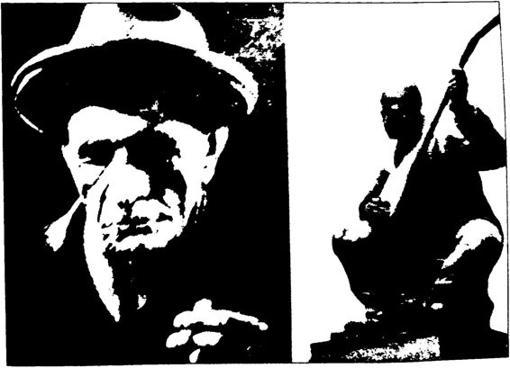 Bütün hayatı boyunca şapka takan Âşık Veysel'in takkeli heykelim diktiler.
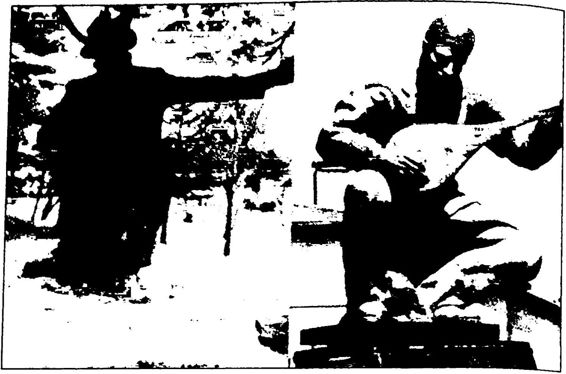 Şapkalı Âşık Veysel heykelini kaldırıp yerine takkeli Âşık Veysel heykeli koydular.
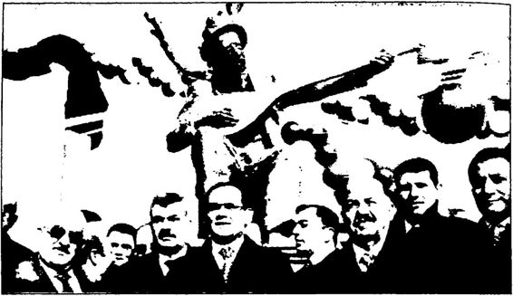 18 Kasım 2009’da Âşık Veysel’in takkeli heykelini kaldırıp yeniden şapkalı heykelini koydular.
Görülen o ki: Türkiye’de BOP’a uygun biçimde yakın tarihi yeni den yazanlar Âşık Veysel’e de yeni bir biyografi yazmaya karar vermiş lerdir. Âşık Veysel, ılımlı İslam’a uygun olarak yeniden yorumlanıp, “hidayete erdirilmek” istenmiştir! Bir taraftan Âşık Veysel’in Atatürk ve Cumhuriyet sevgisi, diğer taraftan Cumhuriyet devrimlerini çağrış tıran şapkalı görünümü hafızalardan silinmeye çalışılmıştır. Bu Âşık Veysel Planı aşama aşama yürütülmüştür. Önce 2009’da “çaktırma dan” şapkalı Âşık Veysel heykeli kaldırılıp yerine takkeli Âşık Veysel heykeli konulmuş, sonra 2013’te Başbakan Erdoğan tarafından Âşık Veysel “CHP mağduru” ilan edilmiştir.
Türkiye’de Atatürk ve Cumhuriyet karşıtlarının “başlık” problemi vardır. Adeta İslam dinini başa giyilen/örtülen/takılan şeye indirgemiş durumdadırlar. Onlara göre erkeklerde şapka giyilmesi “dinsizliğin”, takke, sarık veya fes giyilmesi “dindarlığın” göstergedir! Aynı biçimde kadınlarda başörtüsü takılması “dindarlığın”, başörtüsü takılmaması “dinsizliğin” göstergesidir! Ancak biraz anlayarak Kur’an okuyan her kesin bilebileceği gibi İslam dini böyle şekilci bir din değildir. Ayrıca ne takke, ne sarık ne de fes Müslümanlığın gereği değildir. Atatürk ve Cum huriyet karşıtları, Cumhuriyet’e “başlık” üzerinden saldırmıştır. İstiklal Mahkemeleri İskilipli Atıf Hoca’yı mı astı? “Şapka giymediği için astı!” yalanını söylemişlerdir. Yetmemiş, “İdam sehpasında sallanan İskilipli Atıf Hoca’nın ölü başına şapka giydirildi!” yalanını eklemişlerdir. İstik lal Mahkemeleri Seyit Rıza’yı mı astı? “Seyit Rıza’nın başına zorla şapka giydirildi! ” yalanım söylemişlerdir. Ve Âşık Veysel şapka mı taktı? “Âşık Veysel aslında takkeliydi!” yalanına sarılıp takkeli Âşık Veysel heykeli dikmişlerdir. Bu Cumhuriyet karşıtları, başa giyilen şeyin değil ama ya lan söylemenin, iftira atmanın “günah” olduğunu bilselerdi keşke!
ATATÜRK’ÜN MÜZİK DEVRİMİ Başbakan Erdoğan, 5 Mart 2013’teki konuşmasında, “(...) Bu CHP zihniyeti, böyle bir zihniyettir. Halk Müziği’nin radyolardan dahi yayımlanması yasaklanıyor. Dinlenmesi, icrası yasaklanıyor,” diyerek genç Cumhuriyet’i “Halk Müziği düşmanı” ilan etmiştir!
Öncelikle şunu belirteyim ki, Cumhuriyet tarihinde hiçbir zaman Türk Halk Müziği yasaklanmamıştır.
Türk toplumunun her yönüyle köklerinden beslenip evrensel uy garlığı yakalaması için mücadele eden Atatürk’ün gözden kaçan Müzik Devrimi’nden söz edelim önce.
Atatürk’e göre hayat bir musikidir ve musikisiz hayat olmaz. 1925’te İzmir Kız Öğretmen Okulu’nda öğrencilerle sohbet ederken, “Hayatta musiki lazım mıdır?” diye sormuş, ancak istediği cevabı ala mayınca sorusunu kendisi şöyle cevaplamıştır: “Hayatta musiki lazım değildir. Çünkü hayat musikidir. Musiki ile alakası olmayan nıahlûkat inSiin değildir. Eğer mevzubahis olan hayat, insan hayatı ise musiki be hemehal vardır. Musikisiz hayat zaten olamaz. Musiki hayatın neşesi, ruhu, sürürü ve her şeyidir. ”
Atatürk’e göre en zor devrim Müzik Devrimi’dir. Atatürk’ün ifa desiyle, “Çünkü Müzik Devrimi şahsa önce kendi iç dünyasını unut turmayı, sonra da yeni bir âleme yönelmeyi gerektirir. Onun için çok zordur... Çok zor ama yapılacaktır. ”
Atatürk Müzik Devrimi’ni, “Milletin yüksek gelişiminin işareti” olarak görmüştür: “Bir millet çok şeyde inkılâp yapabilir ve bunla rın hepsinde de muvaffak olabilir, fakat musiki inkılâbıdır ki, milletin yüksek gelişiminin işaretidir,” demiştir.
Atatürk'ün devrimci adımları arasında müziğe de yer vermesinde Montesquieu’nun Kanunların Ruhu adlı eserinin özel bir yeri vardır. Atatürk bu eserde geçen “Müzikte yapılacak en küçük bir değişikliğin devletin yapısında da değişiklik yapılmasını gerektirdiği” düşüncesini Atatürk, 1934’teki Meclis açış konuşmasında, “Bir ulusun yeni deği şikliğinde ölçü, musikide değişikliği alabilmesi, kavrayabilmesidir,” şeklinde ifade etmiştir.
Atatürk’ün Müzik Devrimi’nin iki temel ayağı vardır:
Bu doğrultuda Cumhuriyet’in ilk yıllarında müzikle ilgili çok önemli devrimci adımlar atılmıştır.
Osmanlı döneminde, 1916’da İstanbul’da Maarif Nezareti tara fından kurulan “Dârülelhan”, 1923’te eklenen bir “Batı Müziği Şube si” ile yarı konservatuvar durumuna getirilmiştir.
Osmanlı’dan kalan “Makamı Hilafet Muzikası (Mızıkai Hümâ yûn)”, 1924’te modernize edilerek “Riyaseticumhur Filarmonik Orkestrasına dönüştürülmüştür.
1935’te Cumhurbaşkanlığı Senfoni Orkestrası kurulmuştur.1924’te “Ankara Musiki Muallim Mektebi” kurulmuştur. İlk yönetmeliğinde kurumun kuruluş amacı, “Lise ve orta mekteplerle bi lumum muallim mektepleri için musiki muallimi yetiştirmek” olarak belirlenmiştir. Çok sayıda öğrenci müzik öğrenimi için Avrupa’ya gönderilmiştir. 1924’te Ekrem Zeki Ün ve Ulvi Cemal Erkin Paris’e, 1926’da Necil Kâzım Akses ve 1927’de Haşan Ferit Alnar Viyana’ya, Cevad Mem duh Altar Leipzig’e, 1928’de Ahmet Adnan Saygun Paris’e, Halil Bedii Yönetken Prag’a gönderilmiştir. Bu arada Nurullah Şevket Taşkıran ile Bayan Afife Avrupa’da şan öğrenmiştir. Avrupa’da çağdaş Batı Müziği öğrenen bu gençler 1930’dan itibaren yurda dönüp Ankara Muallim Musiki Mektebi’nde görev almaya başlamıştır.
Çoksesli müzik alanında değerli eserler veren Cemal Reşit Rey, Ferit Alnar, Ulvi Cemal Erkin, Ahmet Adnan Saygun, Necil Kâzım Ak ses, “Türk Beşleri” olarak anılmıştır.
1927 yılında “Dârülelhan” kapatılarak “İstanbul Konservatuva rı” açılmıştır.
1930’larda Ankara’da Batı Müziği konserleri verilmeye başlan mıştır. Bu konserler zamanla tüm yurda yayılmıştır.
Bu çahşamalar sonunda Musiki Muallim Mektebi bünyesinde bir “Milli Musiki ve Temsil Akademisi” kurulmuştur.
Kültür Bakanı Abidin Özmen başkanlığında Ankara’da 26 Ka sım 1934 tarihinde bir müzik kongresi toplanmıştır. Bu kongrede Türkiye’nin müzik sorunları enine boyuna tartışılmış, bu sorunların çözüm yolları sıralanmış ve müzik eğitiminin çerçevesi belirlenmiştir.
1936’da Musiki Muallim Mektebi Devlet Konservatuvarı’na dö nüştürülmüştür.
1939’dan itibaren müzik öğretmeni yetiştirme işini Gazi Eğitim Enstitüsü üstlenmiştir.
1949’da da Devlet Opera ve Balesi kurulmuştur.Atatürk’ün çabalarıyla 19341935 yıllarında Ankara’da ulusal opera temsilleri gerçekleştirilmiştir.
Atatürk, Müzik Devrimi’ni hayata geçirirken yabancı uzmanlar dan yararlanmıştır. Bu amaçla 1932’de İstanbul Konservatuvarı’nı ıs lah etmek üzere Prof. Joseph Marx, 1935’te bir “musiki konservatuva rı” açmak ve “müzik kültürünün organizasyonu işleriyle ilgilenmek” üzere Prof. Paul Hindemith, 1936’da Türk Halk Müziği’nden derleme ler ve besteler yapmak üzere ünlü Macar besteci Bela Rartok, 1935’te, devlet tiyatro ve operasını düzene sokmak üzere Alman danışman Prof. Cari Ebert Türkiye’ye davet edilmiştir.
1930’larda ve 1940’larda Halkevlerinde, Köy Enstitülerinde ve radyolarda Çoksesli Batı Müziği ve Türk Halk Müziği ağırlıklı kon serler verilmiştir.
Türk tarihinin gerçek anlamda ilk ve tek Müzik Devrimi’ni Ata türk gerçekleştirmiştir. 1930’larda ve 1940’larda yapılan çalışmalarla Ulusal Türk Müziği oluşturulmak istenmiş, bu konuda bir hayli mesa fe alınmış, ancak 1950’lerde başlayan Karşı Devrim sürecinde Ulusal Türk Müziği yerini Arap müziğine bırakmıştır.
Ulusal Türk Müziği Yaratmak Türk Devrimi, ulusal kültürü arayıp, bulup işleyip evrensel uy garlığa katkı sağlamayı amaçlar. “ Yüksek bir kültür onun sahibi olan millette kalmaz diğer milletlere de tesirini gösterir, büyük kıtalara yayılır,” diyen Atatürk’ün amacı, her alanda Türk ulusal kültürünü yükseltmektir. Atatürk, Müzik Devrimi’ni yaparken de bu temel ilke doğrultusunda Türk Halk Müziği’ni arayıp bulup Batılı yöntemlerle yeniden yorumlayıp Ulusal Türk Müziği ile evrensel müziğe katkı sağ lamak istemiştir. Atatürk bu isteğini 1934 yılındaki Meclis açış konuş masında şöyle ifade etmiştir:
“Bugün dinletmeğe yeltenilen musiki yüz ağartacak değerde ol maktan uzaktır. Bunu açıkça bilmeliyiz. Ulusal ince duygulan, dü şünceleri anlatan; yüksek deyişleri, söyleyişleri toplamak, onları bir gün önce genel son musiki kurallarına göre işlemek gerekir. Ancak bu sayede Türk Ulusal Musikisi yükselebilir, evrensel musikide yerini alabilir.”'
Atatürk’ün Müzik Devrimi’nin temelinde de Ziya Gökalp’in gö rüşleri vardır. Atatürk, Gökalp’in 1923 yılında yayımlanan Türkçü lüğün Esasları adlı kitabında müzik konusundaki şu düşüncelerinden etkilenmiştir:
Gökalp’e göre Türkiye’de yan yana yaşayan “iki musiki” vardır. Bunlardan biri halk arasında kendi kendine doğmuş olan “Türk Musiki si”, diğeri Farabi tarafından Bizans’tan alman “Osmanlı Musikisi” d ir. Türk Musikisi “ilhamla” meydana gelmiştir, dışarıdan alınmamıştır. Osmanlı Musikisi ise “taklitle” dışarıdan alınmıştır. Bunlardan birinci si “harsımızın” (kültürümüzün), İkincisi medeniyetimizin musikisidir. Osmanlı Musikisi kurallardan oluşan bir fen biçiminde olduğu halde, Türk Musikisi kuralsız, usulsüz, fensiz melodilerden, “Türkün, bağ rından kopan samimi nağmelerden” oluşur. Fakat Bizans Musikisi’nin kökeni eski Yunan kültürüne dayanır.
Yani Ziya Gökalp’e göre Türk Musikisi Halk Müziği’dir. Osman lı Musikisi ise Sanat Müziği’dir. Türk Halk Müziği Türkündür, Türk Sanat Müziği ise YunanındırBizans’ındır.
Gökalp’e göre Doğu’da üst sınıflara ait bir “diimtek musikisi”
vardır. Farabi bu “fenni musikiyi” Bizans’tan alıp Arapçaya çevir miştir. “Arapçaya naklolunduktan sonra bu hasta musiki sarayların rağbetiyle Acemceye ve Osmanlıcaya da çevrildi.” Bu musiki, Arabın, Acemin, Türkün üst sınıflarına girmiş, ancak halka inmemiştir. Türk ler Orta Asya’dan beri çalıp söyledikleri melodilerle milli bir halk mu sikisi yaratmışlardır. Doğu Musikisi İslam Musikisi de değildir, çünkü bu musikiyi Müslüman milletlerden başka Ortadokslar, Ermeniler ve Yahudiler de mabetlerinde icra etmektedirler.
Gökalp’e göre, Türkün öz müziği olan Türk Halk Müziği Etnog rafya müzelerinden, halk ağızlarından, “Koşmalar, Türküler ve nağ meler de hakiki saz şairlerinden alınmalıdır.”
Gökalp daha sonra diimtek musikisi” diye adlandırdığı Yunan Bizans kaynaklı Doğu Musikisi’ne, yani Sanat Müziği’ne ağırlık veren, buna karşılık gerçek Türk Musikisi’ne, yani Halk Müziği’ne hiç önem vermeyen Osmanlı’nın “Dârülelhan”ını eleştirmiştir.
Gökalp, YunanBizans kökenli, Arabın, Acemin, Türkün saray lılarının müziği olan, halktan kopuk “Şark/Doğu Musikisi’ni” bir ke nara bırakıp “harsımızın musikisi” olan Türk Halk Müziği ile “yeni medeniyetimizin musikisi” olan Batı Müziği’nin uyumunu sağlayarak “milli musikimizi”, yani Ulusal Türk Müziği’ni yaratmamız gerektiğini ileri sürmüştür.
Şöyle demiştir:
“Halk Musikisi harsımızın. Garp Musikisi deyeni medeniyetimizin musikileri olduğu için, her ikisi de bize yabancı değildir. O halde mil li musikimiz, memleketimizdeki Halk Musikisi ile Garp Musikisi’nin imtizacından doğacaktır. Bunları toplar ve Garp Musikisi usulünce ar monize edersek hem milli hem de Avrupai bir musikiye malik oluruz... İşte Türkçülüğün musiki sahasındaki programı esas itibariyle bundan ibaret olup bundan ötesi milli musikarlarımıza aittir.”
Atatürk Müzik Devrimi’ni hayata geçirirken genel olarak Ziya Gökalp’in bu görüşlerinden etkilenmiştir. Atatürk’ün Müzik Devrimi üzerindeki Gökalp etkisini gösteren çok kanıt vardır. Örneğin 8 Ağus tos 1928 gecesi İstanbul Sarayburnu’nda halka Harf Devrimi’ni duyürürken yeni harflerle yazıp Falih Rıfkı Atay’a okuttuğu notta şöyle demiştir:
“Bu gece burada güzel bir tesadüf eseri olarak Şark’m en müm taz iki musiki heyetini dinledim. Bilhassa sahneyi birinci olarak tezyin eden Münire’tül Mehdiye Hanım sanatkârlığında muvaffak oldu.” Atatürk bu müziğin, Türkün “ruh ve hissini” tatmin edemeyecek ka dar basit ve gam verici olduğunu, buna karşın “medeni dünyanın musi kisi”, yani Batı Müziği’nin şenlendirici olduğunu belirtmiş ve “Fıtraten şen ve şatır olan Türk”ün artık Doğu Müziği’yle gamlanmak yerine Batı Müziği’yle şenleneceğini ifade etmiştir.
Atatürk, 30 Kasım 1929 tarihinde de gazeteciyazar Emil Ludwig’e Doğu Müziği hakkındaki görüşlerini şöyle dile getirmiştir.
Atatürk, “Montesquieu’nun ‘Bir milletin musikideki meyline ehemmiyet verilmezse, o milleti ilerletmek mümkün olmaz’ sözünü okudum, tasdik ederim. Bunun için musikiye pek çok itina göstermek te olduğumu görüyorsunuz. ”
Ludwig, “Şark’ın yegâne anlayamadığımız bir fenni varsa o da musikisidir.”
Atatürk, “Bunlar hep Bizans’tan kalma şeylerdir. Bizim hakiki musikimiz Anadolu halkında işitilebilir. Bu nağmelerin ıslahla düzel tilmesi mümkün değildir. Garp musikiciliği bugünkü haline gelinceye kadar ne kadar zaman geçti? Dört yüz sene kadar geçti. Bizim bu ka dar zaman beklemeye vaktimiz yoktur. Bunun için Garp Musikisi’ni almakta olduğumuzu görüyorsunuz.”'
Görüldüğü kadarıyla Ziya Gökalp ve ondan etkilenen Atatürk, Türk Müziği’nin kaynağının Anadolu halk ezgileri, yani türküler, de yişler olduğunu ve bu halk ezgilerinin çağdaş Batı Müziği tekniğiyle işlenerek Ulusal Türk Müziği’nin yaratılması gerektiğini düşünmüştür. Nitekim Atatürk, “Bizim hakiki musikimiz Anadolu halkında işitilebi lir,” demiştir. Erken Cumhuriyet döneminde yaratılması planlanan Ulusal Türk Müziği’nin belkemiği olarak görülen Halk Müziği ve bu müziği icra eden halk şairleri/saz âşıkları/ozanlar baş tacı edilmiştir.
Ulusal Türk Müziği’nin yaratılması için olağanüstü bir “müzik seferberliği” başlatan Atatürk, 4 Ocak 1938 akşamı bu konudaki gö rüşlerini İsparta Milletvekili Kemal Turan Ünal’a yazdırmıştır. Ünal da Atatürk’ün yazdırdığı bu yazıları, Ulus gazetesinde yayımlamıştır. İlk yazı 8 Ocak 1938’de “Türk Musikisi: Fasıl Musikisi Milli Musi ki Olmadı ve Değildir” başlığıyla; ikinci yazı ise “Musikiye Ait Bir Notu" başlığıyla yayımlanmıştır. Ünal yazılarında, uzun uzun Doğu, Batı ve Türk müziğinden, Batı Müziği tekniğinden, fasıl müziği ile Halk Müziği’nin farkından, bizi modern müziğe asıl Halk Müziği’nin götüreceğinden söz etmiştir.
Özetlemek gerekirse; Erken Cumhuriyet döneminde YunanBizans kökenli olduğu iddia edilen Sanat Müziği bir kenara bırakılarak Batı Müziği ile Halk Müziği’ne ağırlık verilmiştir. Batı Müziği’nin tekniğiyle Halk Müziği’nin ezgileri işlenerek Ulusal Türk Müziği yaratılmak isten miştir. Bu “yaratma” hiç de kolay olmayacağı için de öncelikle Çoksesli Batı Müziği’ne ağırlık verilerek kulaklar bu müziğe alıştırılmaya çalışıl mıştır. Bir taraftan kulaklar Batı Müziği’ne alıştırılırken, diğer taraftan Halk Müziği çalışmaları yapılmış; halk ezgileri, deyişleri toplanmıştır.
Peki ama, “Doğu Musikisi’ni/Sanat Müziği’ni, ‘YunanBizans Musikisi’dir. Bize yabancıdır. Bu nedenle Türk ruhunu ve duygusunu tat minden uzaktır,’ diyerek üstelik bu musikiden kişisel olarak zevk alması na karşınbir kenara bırakan Atatürk, Batı Musikisi’ni neden almıştır?” diye soranlara şöyle cevap vermek gerekir: Çünkü aslında Atatürk’ün amacı bize ait olmayan Batı Musikisi’ni almak da değildir. Onun amacı, Batı Müziği’nin tekniğini ve çoksesliliğini alarak, Türk Halk Müziği’ni, yüzyıllar sonunda gelişip olgunlaşan bu teknikle çoksesli bir şekilde işleyip Ulusal Türk Müziği’ni yaratmaktır. Nitekim bir keresinde şöyle demiştir: “ Ulusal müziğin teknikte ve formda olduğu kadar, anlatım gücünde de gelişip olgunlaşmasını kesintisiz sağlayacak tek faktör... çoksesliliktir. ”Ama takdir edilecektir ki, Batı’da yüzyıllar içinde gelişip olgunlaşan Batı Müziği’nin tekniğini ve çoksesliliğini bir çırpıda alıp Türk Halk Müziği’ni bu çerçevede işlemek birkaç yılda olabilecek işler değildir. Bu yüzden de Atatürk, öncelikle kulakları bu müziğe alıştırmak istemiştir. Kulaklar alıştıktan sonra, teknik ve çokseslilik çok daha kolay anlaşılacaktır. Ay rıca Atatürk’e göre Batı Musikisi”, sadece Batı’ya özgü bir müzik değil, yüzyıllar içinde ulusal müziklerle beslenerek gelişip olgunlaşmış “evrensel musiki” veya “medeni musiki” d ir.
Atatürk’ün bütün devrimleri gibi Müzik Devrimi’ni de doğru an lamak için onun 1923’te Konya gençleriyle yaptığı konuşmada söyle diği şu sözleri asla unutmamak gerekir:
“Bu millete gideceği yolu gösterirken, dünyanın her türlü ilmin den, keşfiyatından, terakkiyatından istifade edelim, lâkin unutmayalım ki, asıl temeli kendi içimizden çıkarmak mecburiyetindeyiz.”
Atatürk’ün bu sözlerini onun Müzik Devrimi’ne uyarlarsak: “Dünyanın her türlü ilminden, keşfiy atından, terakkiyatından istifade etmek” için Batı Müziği’nden, “Asıl temeli kendi içimizden çıkarmak” için de Türk Halk Müziği’nden yararlanılmıştır.
Atatürk bu düşüncesini 1 Kasım 1935 tarihli Meclis açış konuş masında, “Ulusal musikimizi, modern teknik içinde yükseltme çalış malarına bu yıl daha çok emek verilecektir,” şeklinde ifade etmiştir.Görüldüğü gibi Atatürk’ün derdi “ulusal musikimizi modern teknik içinde yükseltmektir.”
Atatürk Türk Musikisi’ni, “Yüksek bir medeniyetin musikisi” ola rak adlandırmış ve bu musikiyi bütün dünyanın anlaması gerektiğini belirtmiştir. Bunun için de, “Milletçe bugünkü medeniyet dünyasının seviyesine yükselmemiz lazımdır,” demiştir.
Halkevlerinin birinci yıldönümünde Necip Ali Bey, Müzik Devrimi’nde izlenecek yolu şöyle açıklamıştır:
“Tamamıyla Batı Müziği’ni alarak, milli müziğimizi ihmal etmek, hem milli kültürümüz, hem de uluslararası sanat dünyası için bir hata dır. Böyle bir hataya düşmemek için, tekrar edelim ki, milli hayatımı zın terennümlerini, milli benliğimizin nağmelerini uluslararası müzik tekniği içinde ifadeye hazırlanıyoruz.”
Ulusal Türk Müziği’nin oluşturulması için Selim Sırrı Tarcan’ın önerisi de şudur:
“Yapılacak iş açıktır, meydandadır. Bir taraftan Batı Müziği’nin ritmine kulaklarımızı alıştırmak, öbür taraftan da uluslararası müzik tekniği ile milli duygularımızı seslendirmek.”
Nitekim 1930’larda “Türk Beşleri” Atatürk’ün Müzik Devrimi’ nin amaçladığı gibihalk ezgilerinden çoksesli parçalar yapmayı başar mıştır. Örneğin Cemal Reşit Rey'in 1931’de yaptığı “Enstantaneler” i, Ulvi Cemal Erkin’in 1931 'de yaptığı “Beş Damla”sı, Ahmet Adnan Saygun’un 1934’te yaptığı “İnci'nin Kitabı” ve Necil Kâzım Akses’in 1934'te yaptığı “Minyatürler'i bu tür eserlerdendir.
Türk Halk Müziği Çalışmaları 1934 yılında, “Bize yeni bir musiki lazımdır ve bu musiki özünü Halk Musikisinden alan çoksesli bir musiki olacaktır,” diyen Ata türk ayrıca “Bizim hakiki musikimiz Anadolu halkında işitilebilirde miştir. Yine 1934 yılında, “(...) Ulusal ince duygulan, düşünceleri an latan; yüksek deyişleri, söyleyişleri toplamak, onları bir gün önce genel son musiki kurallarına göre işlemek gerekir. Ancak, bu sayede Türk Ulusal Musikisi yükselebilir, evrensel musikide yerini alabilir,” de miştir.
Atatürk’ün bu işaretleri doğrultusunda Ulusal Türk Müziği ya ratmak için genç Cumhuriyet’in yöneldiği iki kaynaktan biri Halk Müziği’dir.
Türk tarihine, Türk diline, Türk kültürüne gönülden bağlı olan Atatürk, bu tarihin, bu dilin, bu kültürün en önemli folklorik unsuru olan türkülere de gönülden bağlıdır.
Atatürk’ün özellikle Rumeli türkülerini severek dinlediği bilin mektedir. En sevdiği türküler arasında “Alişimin kaşları kare, Atladım bahçeye girdim, Ayağına giymiş sedef nalini, Bülbülüm dağlar dağlar, Gide gide yarelerin derildi. Köşküm var deryaya karşı, Maya dağdan kalkan kazlar. Manastır, Pencere açıldı Bilal oğlan, Şahane gözler, Ye menimin uçları, Zeynep” gibi türküler vardır.
Atatürk’ten önce Türk halkının her şeyinin unutulması gibi mü ziği, türküleri de unutulmuştu. Atatürk, 1930’lardaki Müzik Devrimi ile Halk Müziği’nin canlandırılmasına, gelişmesine ve yükselmesine çalışmıştır.
Atatürk, Kurtuluş Savaşı devam ederken I. Meclis’te Milli Eğitim Bakanlığı bünyesinde bir Kültür Dairesi kurdurmuş, daha o günlerde Türk Halk Müziği’nin söz ve ezgi derlemelerini toplatmıştır.
Atatürk, bir an önce kaybolmaya yüz tutmuş türkülerimizin halk ağızlarından toplatılıp canlandırılmasını istemiştir. Bu yöndeki çalış malar 1923’te cumhuriyetin ilanından sonra hızlanmıştır. İlk olarak Milli Eğitim Bakanlığı Kültür Dairesi Müdürü Hamit Zübeyr Koşay’ın katkılarıyla Dârülelhan Müdürü Musa Süreyya ve yardımcısı Yusuf Ziya Demirci’nin girişimleriyle bir Halk Müziği anketi yapılmıştır. O anket devam ederken Avusturya’da müzik öğrenimi görüp yurda dö nen Seyfettin ve Mehmet Sezai Asaf kardeşler yine Hamit Zübeyir’in teşvik ve katkılarıyla Batı Anadolu’da bir Halk Müziği araştırması yapmıştır. Bu araştırma sonunda 76 notadan oluşan “Yurdumuzun Nağmeleri” adlı bir kitap hazırlanıp 1926’da basılmıştır. 1929 yılı na kadar yapılan tarama ve araştırma çalışmaları sonunda, 1930 yı lında 1000 kadar türkü belirlenmiştir. Bu türkülerin 700 kadarı 12 adet kitapçıkta toplanmıştır. 1930’lara gelirken bazı özel derlemeler de yapılarak yayımlanmıştır. Örneğin Gazimihal’in Anadolu Türküleri ve Musiki İstikbalimiz adlı kitabı 1928’de, Şarki Anadolu Türkü ve Oyunları adlı kitabı da 1929’da yayımlanmıştır.
Genç Cumhuriyet, 19261936 arasında Türk Halk Müziği konu sunda çok önemli çalışmalar yapmıştır. Örneğin 1936’da Bela Bartok Türkiye’ye geldiğinde Türk Halk Müziği konusunda 1000’e yakın nota, 200 civarında plak ve toplam 100 kitap ve makaleyle karşılaş mıştır.
Kaybolmaya yüz tutmuş Türk Halk Müziği’nin yeniden canlan dırılıp hayatın içine sokulmasında Halkevlerinin çok özel bir işlevi ol muştur. Ankara Halkevi’nin çağrısı üzerine 5 Kasım 1936 tarihinde Ankara’ya gelen ünlü Macar Besteci Bela Bartok Türk Halk Müziği çalışmalarında yol gösterici olmuştur. Bartok, Türkiye’deki 22 günlük Müziği kayıtlarının daha iyi aletlerle yapılmasını önermiş, bu öneri doğrultusunda yeni ses kayıt cihazları alınmış ve cihazlarla derleme gezilerine çıkılmıştır.
1920’lerde başlayan, 1930’larda artarak devam eden derleme ge zileri 1952 yılına kadar sürmüştür. Bu gezilerde bütün iller taranmış, türkülerimiz, ezgilerimiz toplanıp arşivlenmiştir.
Önce derleme gezilerine katılan Muzaffer Sarısözen daha sonra da 1938 yılında Ankara Devlet Konservatuvarı Folklor Arşivi’nin başına getirilmiştir. Bu derlemelerin bir kısmı arşivin şefi Muzaffer Sarısözen tarafından notalara aktarılmıştır. Ankara, İstanbul ve İzmir Yurttan Sesler korolarım kuran da Muzaffer Sarısözen’dir.
İşte bugün TRT’de bir türkü programında bir devlet sanatçısı nın okuyacağı türküyü tanıtan sunucu, “Sanatçımız şimdi de Çorum ve dolaylarından Muzaffer Sarısözen derlemesi olan ... adlı türküyü okuyacak/” diye başlayan cümleler kurabiliyorsa bunu da Atatürk’ün Müzik Devrimi’ne, genç Cumhuriyet’in bu doğrultuda yaptığı türkü tarama ve derleme çalışmalarına borçluyuz.
Halk Müziği’nin çağdaş metotlarla yeniden yorumlanmasında Köy Enstitülerinin de çok özel bir yeri vardır. Fay Kirby’ın anlatımıyla, “Köy Enstitülerinin en büyük başarılarından biri. Halk Müziği'ni Batı müzik tekniğine uygulayabilecek Türk müzik temalarını ve duygularım Kemalizmin özlediği Batı tema ve duygularına aktarabilecek bir kaldı raç bulmuş olmasıdır. Müzik karşıtlığı sofuluğa ya da kahvehane diizekonukluğu sırasında çok sayıda konferans ve konser vermiş, derleme çalışmaları yapmıştır. Bartök konferanslarında Halk Müziği konusun da bilgi vermiştir. Örneğin Ankara Halkevi’nde 9 Kasım 1936 tarihin de verdiği konferansta şu dört noktanın üstünde durmuştur:
Bartök, 10 Kasım 1936’da Ankara Halkevi’nde verdiği başka bir konferansında da “Halk ezgilerinin bilimsel yöntemle derlenmesi, tas nifi ve değerlendirilmesi'’' konusunu işlemiştir. Bartök, türkü derleme çalışmalarına da katılmıştır. 1927 Kasım 1936 tarihleri arasında Adana ve yöresine yapılan derleme ve incele me gezisinde önce Adana’ya gelen yaşlı bir köylüyle iki halk sanatçısı nı (âşık) dinlenmiş, oradan Tarsus ve Mersin üzerinden Osmaniye’ye geçilmiştir. Osmaniye’de Çardak köyünde kayıtlar yapılmış, oradan Tüysüz Tepe’deki Tecilli Yörük kışlalarına gidilmiştir. 90 kadar parça fotonografa alınmıştır. Geziye, Bela Bartök yanında Türk Beşleri’nden Ahmet Adnan Saygun, Necil Kâzım ve Ulvi Cemal de katılmıştır.
Bartök Türkiye’deki Halk Müziği çalışmaları sonunda “Bir Halk Musikisi Arşivi Tesisi Hakkında Teklifler” adlı bir öneri raporu hazır layıp bakanlığa sunmuştur. Rapordaki öneriler dört ana grupta top lanmıştır:
Genç Cumhuriyet’in Türk Halk Müziği çalışmalarını yönlendi ren müzik bilimcilerden biri de Hindemith’dir. Hindemith, Bartök’un raporunu inceledikten sonra 1937 Şubatı’nda “Halk Müziği ve Plak Arşivi” adıyla kısa bir rapor hazırlamıştır. Hindemith raporunda Halk İtiyat dediğimiz şeye gelince, sizin Osmanlt Musikisini Anadolu köy lüsü dinler mif Dinlemiş mi? Onda o musikinin itiyadı yoktur.”Konuyu Atatürk üzerinden örneklendirelim:
Atatürk’ün en sevdiği Türk Sanat Müziği parçaları arasında “Cana rakibi handan edersin, Habgahı yare girdim arz için ahvalimi. Kaçma mecburundan ey ahuyu vahşi, ülfet et, Mani oluyor halimi takrire hi cabım, Badei vuslat içilsin kâsei fağfurdan” gibi eserler vardır.
Atatürk’ün en sevdiği Türk Halk Müziği parçaları arasında ise Alişimin kaşları kare, Atladım bahçeye girdim, Ayağına giymiş sedef nalini, Bülbülüm dağlar dağlar. Gide gide yarelerin derildi. Köşküm var deryaya karşı, Maya dağdan kalkan kazlar, Manastır, Pencere açıldı Bi lal oğlan, Şahane gözler, Yemenimin uçları, Zeynep” gibi eserler vardır.
Görüldüğü gibi Atatürk’ün sevdiği Türk Sanat Müziği parçaları Arapça ve Farsça sözcüklerle dolu olduğu için kolay kolay anlaşılamaz ken, Türk Halk Müziği parçaları Türkçe oldukları için çok kolay anlaşıla bilmektedir. İki müzik arasındaki fark, Divan Edebiyatı ile Halk Edebiyatı arasındaki farkı akla getirmektedir. Bilindiği gibi Arapça, Farsça ağırlıklı, ağdalı Divan Edebiyatı da halk tarafından anlaşılamadığı için saray edebi yatı olarak kalmıştı. Aynı durum Sanat Müziği için de geçerlidir.
Atatürk, 1933 yılında bestelenecek 10. Yıl Marşı ile yakından ilgilenmiştir. Hazırlıkların devam ettiği sırada bestenin okunuşunu kontrol etmek için öğretmenleri ve öğrencileri Çankaya’ya çağırmış tır. Misafirler Çankaya’ya geldiklerinde bir gazel sesiyle karşılaşınca çok şaşırmışlardır. Çünkü Atatürk, okulda yasak olan Alaturka Müzik dinlemektedir. Önce gazeli söyleyen Denizkızı Eftelya Hanım’ı gönde ren Atatürk, sonra öğrencilere şunları söylemiştir: “Bağışlayın yavrula rım, ben bu müzikle yetiştirildim. Ama bu müzik gençliğin heyecanım, yurtseverliğini dile getiremez. Divan Edebiyatı nasıl tükenmişse bit da tükenmiştir. Ama ilerde sizler Batı Musikisi zevki ile yetişir, besteleri nize bu yerli çeşniden de katarsanız o başka!”
Atatürk, “Bizler Alaturka Müziğe alışmışız ama yeni nesiller Alaf ranga Müziğe alışmalıdırlar,” diyerek Müzik Devrimi için kendi yittdeki müziğe karşılık Cumhuriyet Türkiy esinin değerleriyle uyuşma içinde olan halk türkülerine özendirmekle enstitüler, toplumsal ve dev rimsel olanakları olan bir ulusal müzik yaratılması konusunda önemli adımlar atmışlardır.”''
Köy Enstitüleri, öğrencilerini halk türkülerine özendirebilmek için yine halka gitmiş, Âşık Veysel gibi saz şairlerinden, halk ozanlarından yararlanmıştır. Enstitüler halk türküleriyle birlikte halk oyunlarına da çok büyük önem vermiştir. Kendi bölgelerinin en tanınmış halk oyun cuları enstitülerde çalıştırılmıştır. Örneğin Haşan Çakı Efe, Kızılçullu, Ladik, Hasanoğlan, Düziçi ve Savaştepe’de öğrencilere halk oyunlarını öğretmiştir.
Bugün Türk Halk Müziği hâlâ varsa, türkülerimiz hâlâ yaşıyorsa, bunun iki nedeni vardır. Birincisi, saz çalmayı günah sayan bağnaz zih niyete karşın halk ozanlarının türküleri çalıp söylemeye devam etme leri; İkincisi ise Atatürk’ün Müzik Devrimi sırasında Halk Müziği’ne verdiği önemdir.
Alaturka Musiki’nin Yasaklanması Bilindiği gibi Türk Sanat Müziği/Alaturka Musiki halkın değil daha çok sarayın müziğidir. Ziya Gökalp’in ifadesiyle bu müzik Türk değil YunanBizans kökenlidir. Araplara, Acemlere ve Türklere sonra dan geçmiştir.
Ziya Gökalp Türkçülüğün Esasları’’nda, Vahit Lütfi Salcı da Ülkü dergisinde kaleme aldığı bir yazıda bu Doğu Müziği’nin Türk Müziği olmadığını belirtmiştir. Salcı şöyle demiştir: “Osmanlı dili nasıl Türk dili değilse, Osmanlı Müziği de Türk Müziği değildi.”'
Atatürk de benzer düşüncelere sahiptir. O da Sanat Müziği’ni Osmanlı Müziği” olarak adlandırarak şöyle demiştir:
Osmanlı Musikisi Türkiye Cumhuriyetindeki büyük inkılâpları terennüm edecek kudrette değildir. Bize yeni bir musiki lazımdır ve bu musiki özünü Halk Musikisinden alan çoksesli bir musiki olacaktır.
Özetle, Atatürk’ün bu konuşmasının ardından Basın Yayın Genel Müdürü Vedat Nedim Tör ve İçişleri Bakanı Şükrü Kaya’nın “niyet okumalarıyla” 2 Kasım 1934’ten 6 Eylül 1936’ya kadar radyolardan “Şark Musikisi” kaldırılmıştır.
Atatürk’ün böyle bir yasaklamadan yana olup olmadığı halen tam olarak açığa çıkmış değildir. Örneğin Türk tiyatrosunun ünlü isimle rinden Vasfı Rıza Zobu, bu uygulamanın Atatürk’ün amacını aşan bir uygulama olduğunu belirterek Atatürk’ün şu sözlerine yer vermiştir: “... Ne yazık ki sözlerimizi yanlış anladılar. Ben demek istedim ki bi zim seve seve dinlediğimiz Türk bestelerini Avrupalılara da dinletmek çareleri bulunsun. Türk Musikisi’ni milletlerarası bir sanat haline ge tirelim. Türk nağmelerini kaldırıp atalım ve sadece garp milletlerinin hazırdan musikisini alıp kendimize mal edelim, yalnız onları dinleye lim demedim.” Bu tür anıların gerçekliği tartışmalıdır. Gerçek şu ki Atatürk Müzik Devrimi çerçevesinde bir taraftan halk türkülerini derletip notaya aktartırken, diğer taraftan kulakları Çoksesli Batı Müziği’ne alıştırmak için 2 yıl kadar çok sevdiği Türk Sanat Müziği’nin radyolardan çalınmasının yasaklanmasına ses çıkarmamıştır. Bu “ku lak alışkanlığı” konusunda Konservatuvar Müdürü Yusuf Ziya Bey de şöyle demiştir: “Büyük inkılâpçı, her suretle asrileşecek, millileşe cek bir musiki istiyor. Musiki kulak alışkanlığı meselesidir. Kulak neye alışırsa insan ondan zevk alır...” Görülen o ki Atatürk, bu Sanat Müziği yasağında da yeni Türk harflerinin kabulünde olduğu gibi “ra dikal” davranmıştır. Yeni Türk harfleri kabul edilirken, “Gazeteler bir süre hem eski yazıyla hem yeni yazıyla yayımlansın ”, diyen Falih Rıfkı Atay’a, “Çocuğum! Gazetelerde yarım sütun eski yazı kaldığı zaman dahi herkes bu eski yazılı parçayı okuyacaktır, ” diyerek gözleri yeni yazıya alıştırmak için eski yazıyı tamamen yasaklayan Atatürk, benzer şekilde kulakları Çoksesli Batı Müziği’ne alıştırmak için de belli bir süreSanat Müziği’ni yasaklamıştır. Bu tür geçici yasaklar Atatürk’ün devrimci hareket tarzının yansımalarıdır.
Türk Sanat Müziği yasağı, uygulamada Türk Halk Müziği’ni de kapsayınca bu duruma bizzat Atatürk müdahele ederek yasağa ta mittik zevkini bile bir kenara bırakmıştır, Falih Rıfkı Atay'm aktardı rma göre de Atatürk, "Çocuklarımızın ve gelecek nesillerin musikisi Rıtı medeniyetinin musikisidirdemiştir.
Atatürk'ün, “Batı medeniyetinin musikisiderken kastettiği şey Çoksesli Ban Müziği'dir. “Gerçekten de bu dönemde Ankara'nın ha reket noktası halkı çoksesli müziğe alıştırmak ve müzikte evrenselliği yakalayabilmek olarak belirlenmiştir.”*™ Bu doğrultuda 1926 yılında Darülelhan’da Türk Sanat Müziği’nin çalınıp öğrenilmesi yasaklanmıştır.
Dönemin basını Sanat Müziği yasağının, Atatürk’ün 1 Kasım 1934 tarihli Meclis açış konuşmasında sarf ettiği sözlerden ilham alı narak gerçekleştirildiğini iddia etmiştir. Atatürk bu konuşmasında Türk gençlerinin güzel sanatların her dalında ilerlemesinin gerektiği ama özellikle de müzik sanatına öncelik tanınmasını istemiştir. Müzik konusunda yapılması gereken değişikliklerden söz ettikten sonra da ~Bugün dinletmeye yeltenilen musiki yüz ağartacak değerde olmak tan uzaktır. Bunu açıkça bilmeliyiz,” diyerek sözlerine şöyle devam etmiştir: “ Ulusal, ince duyguları, düşünceleri anlatan, yüksek deyişleri, söyleyişleri toplamak, onları bir gün önce genel son musiki kurallarına göre işlemek gerekir. Ancak bu düzeyde Türk Ulusal Musikisi yüksel tilebilir, evrensel musikide yerini alabilir...”
Gerçekten de Atatürk’ün bu konuşmasının iki önemli sonucu ol muştur: Bunlardan biri Ankara’da düzenlenen Musiki Kongresi, diğeri ise Türk Sanat Müziği’nin radyolardan yasaklanmasıdır.
Ertesi günkü Vakit gazetesinde, Atatürk’ün bu Meclis konuşma sının hemen yanında Alaturka Musikiye Paydos!” başlığı yer almış tır. Haberde, “Büyük Şefin nutuklarındaki işaret üzerine Dahiliye Vekili'nin emriyle bu akşamdan itibaren Ankara ve İstanbul radyola rında alaturka neşriyata son verildiği” açıklanmıştır.
O sırada Basın Yayın Genel Müdürü olan Vedat Nedim Tör, Atatürk’ün Meclis konuşmasında müzik konusundaki bu sözlerini du yar duymaz İçişleri Bakanı Şükrü Kaya’ya gitmiş, “Paşa böyle dediğine göre herhalde alaturkanın yasaklanmasını istiyor. Yaparsanız sevinir demiş, Şükrü Kaya da yasaklamıştır.
Atatürk’ün radyolardan iki yıl kadar Türk Sanat Müziği’ni yasak lamasının belli başlı nedenleri şunlardır:
Kulakları Çoksesli Batı Müziği’ne en çabuk şekilde alıştırmak, Türk Sanat Müziği sanatçılarının kendilerini toparlayarak eserle rini daha iyi icra etmelerini sağlamak, Radyolarda Türk Müziği diye çalınıp söylenen eserlerin ulusal ve çağdaş Türk Müziği olamayacak kadar kötü olması, Yazısını, dilini, kültürünü Arap, Acem etkisinden kurtaran genç Cumhuriyet’in müziğini de Arap, Acem etkisinden kurtarmak. Gerçek şu ki, Atatürk her konuda olduğu gibi müzik konusunda da ulusu için kendi kişisel beğenilerini bir kenara bırakarak evrensel ölçüler de Ulusal Türk Müziği yaratmaya çalışmıştır. Bu süreçte çağdaş müzik kurumlan kurmuş, dünyaca ünlü müzisyenlerden, bestecilerden yarar lanmış, Avrupa’ya müzik öğrencileri göndermiş, türküleri derletmiş, ku lakları Çoksesli Batı Müziği’ne alıştırmak için de sadece 2 yıl kadar Türk Sanat Müziği’ni yasaklamıştır. Yasağın Türk Halk Müziği’ni kapsadığını öğrenmesi üzerine de bu yasağa bizzat yine kendisi son vermiştir.
Atatürk’ün Müzik Devrimi 1923’te başlamış 1938’e kadar tam 15 yıl sürmüştür. Türk Sanat Müziği yasağı bu 15 yılın sadece 2 yılında söz konusudur. Dolayısıyla Başbakan Erdoğan’ın CHP döneminde, “Halk müziğinin radyolardan dahi yayımlanması yasaklanıyor. Dinlenmesi, icrası yasaklanıyorşeklindeki açıklaması gerçeği yansıtmamaktadır.
Atatürk’ün Müzik Devrimi sayesinde bugün dünya çapınca Türk sanatçıları, Türk bestecileri yetişmiştir. Türk sanatçılar operadan ora toryoya, senfoniden konçertoya kadar birçok türde beste yapmakta, dünyanın her yerinde konserler vermekte ve ayakta alkışlanmaktadır lar. Üstelik bu sanatçılar, 1950’den bugüne kadar aralıksız devam eden çoksesli müzik düşmanı Karşı Devrim sürecine rağmen yetişmiştir.
Aslında Başbakan Erdoğan’ın, 1930’larda halk türkülerini derle ten Atatürk’ü değil de, 2013’te “içinde rakı geçiyor” diyerek “Vardar Ovası” türküsünü söyletmeyen Başbakan Yardımcısı Bülent Armç'ı eleştirmesi daha doğru olur!
Bu arada, “Vardar Ovası” Atatürk’ün en sevdiği türkülerdendir! Hazır bu koca kitabı bitirirken kendinizi ödüllendirmek için bu güzel türküyü şöyle bir mırıldanmaya ne dersiniz?
“ Vardar Ovası, Vardar Ovası Kazanamadım sıla parası. ”
Yoksa, “Rakı parası” mıydı?
nıamen son vermiştir. Anlatılanlara göre köşkte Tanburacı Osman Pehlivan'ı dinleyen Atatürk, bu türkülerin radyoda halka dinletilip din letilmediğini sormuş, bunun üzerine o da, “ Gazi hazretleri siz radyoda Türk Müziği yayımlanmasını yasakladınız, buna imkân bulamıyoruz deyince Atatürk, “Bunu da yanlış anladılar, ” diyerek Tanburacı’yı derhal radyoya gönderip türkülerin artık radyodan yayımlanmasını emretmiştir. Nitekim 14 Şubat 1936 tarihinden itibaren İstanbul Radvosu’nun günlük programlarına Tanburacı Osman Pehlivan’ın “halk şarkıları” da dahil edilmiştir.
Türk Sanat Müziği yasağını da yine bizzat Atatürk delmiştir. Hazi ran 1937’de Ürdün Kralı Abdullah onuruna Florya Köşkü’nde verdiği yemekte başta Münir Nurettin olmak üzere dönemin ünlü sanatçıların dan oluşan bir topluluğa Türk Sanat Müziği konseri verdirmiştir.
Atatürk, daha sonra da Mart 1938’de Ankara Radyosu sanatçıla rından Melek Tokgöz (Erdik)’in bir Türk Sanat Müziği konseri verme sini istemiştir. Ayrıca bu konsere bizzat giderek sanatçıya bir de çiçek göndermiştir. Atatürk’ün bu konseri ölümünden tam sekiz ay önce şereflendirdiği dikkate alınacak olursa vermek istediği mesajın önemi çok daha iyi anlaşılacaktır.
Atatürk, Müzik Devrimi’yle Batılı teknikleri kullanarak Ulusal Türk Müziği yaratmayı amaçlamıştır. Aslında Atatürk’ün istediği şey, okullarda, radyolarda, halk arasında, bu yeni Ulusal Türk Müziği’nin çalınıp söylenmesidir. “ Yarım yamalak bir eser vermektense hiç eser vermemek daha iyidir,” diyen Atatürk, okullarda ve radyolarda Türk Müziği adı altında Şark/Doğu/Alaturka müziklere yer verilmesini is tememiştir. Bu nedenle 1926’da bütün okullarda müzik öğretilmesi, 1934’te de radyolarda Türk Sanat Müziği çalınması yasaklanmıştır. Atatürk, Ulusal Türk Müziği yaratıldıktan sonra bu yasaklara son ver meyi düşünmüş gibidir. Ancak bu işin daha çok zaman alacağını gör düğünden bu yasakları kısa bir süre sonra kaldırmıştır.
Diğer Tezler Başbakan R. Tayyip Erdoğan’ın tarihle yüzleşirken dile getirdiği “ta rih tezleri” sadece bunlarla sınırlı değildir. Erdoğan’ın daha pek çok “ta rih tezi” vardır! Kitabın hacminin fazlaca artması yüzünden Erdoğan’ın bu tezlerine ayrıntılı olarak değinemiyorum. Ancak yine de söz konusu tezlerden bazılarına birkaç cümleyle de olsa cevap vermek istiyorum.
1. İsmet İnönü Döneminde Gaz, Ekmek vb.
Karneyle Dağıtılırdı!
Başbakan Erdoğan özellikle seçim konuşmalarında 1940’larda İnönü döneminde Türk insanının ne kadar büyük sıkıntılar çektiğini anlatmak için o dönemde mal dağıtmak için çıkarılan karneleri göste rerek, “İşte bunlar her şeyi bu karnelerle dağıttılardiye İnönü’yü ve CHP’yi eleştirmiştir.
Her şeyden önce 19391946 arası II. Dünya Savaşı yıllarıdır. Tür kiye, İnönü’nün büyük başarısı sonunda II. Dünya Savaşı’na girme miş, ancak her an savaşa girecekmiş gibi de hazırlıklar yapmıştır. Ordu alarma geçirilmiş, ordunun ihtiyaçlarına öncelik verilmiş, silah, cep hane ve yiyecek stokları yapılmıştır. Savaşın ne demek olduğunu çok iyi bilen İsmet İnönü, muhtemel bir Alman saldırısına karşı gereken hazırlıkları yapmıştır. Bu savaş tedbirleri ve hazırlıkları sırasında halk da ister istemez bazı sıkıntılar çekmiştir. Ekmek, gaz vb. karneyle da ğıtılmaya başlanmıştır. İnönü, evet, belki insanları ekmeksiz bırakmış, ama bizzat ifade ettiği gibi, babasız bırakmamıştır.
Her fırsatta İnönü dönemindeki karneleri gösterip İnönü’yü eleş tiren Başbakan Erdoğan nedense hiçbir zaman Menderes dönemindeki karnelerden söz etmemiştir. Üstelik İnönü savaş yıllarının olağanüs tü koşullarında “karne” kullandırırken, Menderes normal koşullarda “karne” kullandırmıştır. Menderes döneminde, özellikle 19541960 arasında piyasalarda büyük sıkıntılar yaşanmıştır.
ği gibi, Menderes’in karneyle dağıttığı ekmekten, şekerden, kahveden de söz etmemiştir.
2. Üç beş Çanak Çömlek Marmaray’ı Dört Yıl Geciktirdi!
Başbakan Erdoğan, Marmaray kazılarının gecikme gerekçesinin arkeolojik bulgular olduğunu, “Üç beş çanak çömlek Marmaray’ı dört yıl geciktirdi,” şeklinde ifade etmiştir. Ancak Erdoğan’ın “üç beş ça nak çömlek” olarak adlandırdığı Marmaray bulguları, dünya tarihini değiştirecek kadar önemlidir.
Şöyle ki:
2004 yılında başlayan Yenikapı arkeolojik kazı çalışmalarında bugüne kadar 35 batık, 38.000 envanterlik (müzelik) eser bulunmuş tur. Dünyanın en eski neolitik dönem ahşap kullanım aletleri gün yü züne çıkarılmıştır.
Üsküdar, Sirkeci, Yenikapı ve Sultanahmet’te yaklaşık 58.000 metrekarelik alanda gerçekleşen kazılar sırasında şimdiye kadar neoli tik, Bizans, Osmanlı ve Cumhuriyet dönemlerine ait mimari kalıntılar ile 7600 adet taşınabilir kültür varlığı gün ışığına çıkartılmıştır.
Her şeyden önemlisi Avrupa medeniyetinin temellerinin İstanbul üzerinden geçiş yaptığı belirlenmiştir.
Eksi 1 metre ile eksi 6.30 metre arasında, erken Bizans dönemi nin en büyük limanı olan Theodosius Limanı gün ışığına çıkarılmıştır. Marmaray kazı alanında 13, metro kazı alanında 22 olmak üzere de ğişik ölçü ve tipte 511. yüzyıllara tarihlendirilen 35 batık tekne bu lunmuştur. Kadırga tipi batık ortaçağ için dünyada bir ilktir. Bu kadar çok batığın bir arada bulunduğu ve toprak tarafından korunan başka bir arkeolojik alan dünyada yoktur.
8500 yıllık ilk insan mezarı bulunmuştur. İstanbul tarihiyle ilgili ezber bozulmuştur. İstanbul’un tarihinin 8500 yıl geriye gittiği anla şılmıştır.
Kazılarda neolitik dönem İstanbulu’nun ilk yerlilerine ait ayak izi tespit edilmiştir. Neolitik dönem (MÖ 55008000) insan ayak izlerinin sayısı 390’ı bulmuştur.
Kalıntıların çevresindeki büzülmüş pozisyonda (Hoker) ve urne gömüler arkeoloji dünyasını ayağa kaldırmıştır. 2011 başlarında Ye nikapı metro kazı alanı içinde neolitik dönem mezar mimarisi içinde 761
Örneğin Menderes döneminde; 5 Ekim 1954’te piyasada nal çivisi bile bulunamamaktadır.
14 Mart 1955’te kişi başına 250 gram şeker dağıtımına başlan mıştır.
18 Mayıs 1955’te Kira Kanunu’yla mesken kiralarına yüzde 200, işyerlerine yüzde 400 zam yapılmıştır.
14 Haziran 1955’te şeker ve kahve sıkıntısı had safhaya varmıştır.
8 Temmuz 1955’te stokçuluğa karşı hükümet önlemler almıştır.
18 Nisan 1956’da ete 5 lira narh konulmuştur. Vali Fahrettin Ke rim Gökay, “Her gün et yemeyin, yumurta da çok yararlıdır/” demiştir.
Eylül 1956’da Ankara’da kahve karneye bağlanmıştır.
Ocak 1957’de İstanbul’da et ve ekmek sıkıntısı baş göstermiştir.
Ocak 1957’de akaryakıt dağıtımı karneye bağlanmıştır.
Kasım 1957’de Brezilya’dan 300 ton kahve getirilmiştir. Kişi başı na 12 gram kahve dağıtılmıştır.
Haziran 1958’de Tabipler Odası ilaç sıkıntısından yakmmıştır.
Temmuz 1958’de Ankara’da benzin karneye bağlanmıştır.
Temmuz 1958’de İstanbul’da şeker ve gazyağı sıkıntısı başlamıştır.
Ağustos 1958’de lüks eşya ithali yasaklanmıştır. Tüketim malları zamlanmıştır.
Aralık 1958’de gazinolarda zamlarla ilgili espri yapmak yasaklan mıştır.
Çok açık bir şekilde görüldüğü gibi Menderes döneminde, özel likle 1954’ten sonra ekonomi içler acısı durumdadır. Ekmek, şeker, gazyağı, kahve, hatta nal çivisi ya bulunmamakta ya da karneye bağ lanmış olarak sınırlı bir şekilde dağıtılmaktadır. Enflasyon almış başını gitmiştir. Buna rağmen Başbakan Erdoğan’ın, savaş koşullarında bazı maddeleri karneyle dağıtmak zorunda kalan İnönü’yü eleştirirken, ABD kredileriyle beslenen Menderes döneminde ekmek, şeker, gazyağı ve kahve bulunmamasından ve birçok malın karneyle dağıtılmasından hiç söz etmemesi düşündürücüdür!
Kendisini Menderes’le özdeşleştiren Başbakan Erdoğan, Men deres’in buldozerle yıktırdığı camilerden, Menderes’in kapattığı uçak fabrikalarından, Menderes’in yapmadığı demiryollarından söz etmedi yıl sarayda kaldığını söylemiştir. Yani Gülen, Kanuni’nin 44.5 yılını seferlerde geçirdiğini ima etmiştir.
Ancak Kanuni Sultan Süleyman ne Erdoğan’ın dediği gibi 30 yılını ne de Gülen’in dediği gibi 44.5 yılını seferlerde, at sırtında geçirmiştir.
Necdet Sakaoğlu’nun ifade ettiği gibi, “Süleyman’ın saltanatının 30 yılını seferlerde geçirdiği, salt bir gaza ve savaş adamı olduğu da doğru değildir. O dönemde Batı’ya yapılan seferlere iklim koşulları nedeniyle nisanmayıs aylarında çıkılır, en geç kasımda dönülürdü. Doğuya yaptığı üç sefer ise, iki doğu seferi kışı Anadolu'da geçirmek gerektiğinden, iki yılı almıştır. ”Özetle:
Belgrad Seferi: 5 ay 3 gün.
Rodos Seferi: 7 ay 13 gün.
Mohaç Seferi: 6 ay 20 gün.
Viyana Seferi: 6 ay 6 gün.
Alman Seferi: 6 ay 26 gün.
Irakeyn Seferi: 1 yıl 6 ay 27 gün.
Adriyatik (Pulya) Seferi: 6 ay 5 gün.
Kara Buğdan Seferi: 4 ay 19 gün.
İstabur Seferi: 5 ay 7 gün.
Estergon Seferi: 5 ay 23 gün.
Elkas Seferi: 1 yıl 8 ay 22 gün.
Nahcivan Seferi: 1 yıl 11 ay 3 gün.
Zigetvar Seferi: 4 ay 6 gün.
Bu 13 seferde Kanuni’nin bulunduğu süre 10 yıl 1 aydır.Osmanlı İmparatorluğunun Tarihsel Coğrafyası kitabının yazarı tarihçi Donald Edgar Pitcher’e göre Kanuni’nin bizzat ordunun başına geçerek katıldığı 13 Seferi Hıimâyûn’da geçirdiği süre 10 yıl 3 ay’dır.
Kanuni Sultan Süleyman, 46 yıllık saltanatının 10 yıl 1 ay veya 10 yıl 3 ayını seferlerde, 36 yılını ise genellikle İstanbul’da ve bazen de Edirne’de geçirmiştir.
Erdoğan ve Gülen’in Kanuni’yi daha da “cengâver” göstermek için ortaya attıkları iddia gerçekdışıdır.
Türkiye’de son zamanlarda “Yeni Osmanlıcılık” akımı çerçevesin de bu tür “Osmanlı seviciliği” yüklü çarpıtmalar sıkça yapılmaktadır.n adir görülen ahşap kullanımı ile karşılaşılmıştır. Ok, yay, kano küreği gibi buluntular dünyanın en eski ahşap eserleridir. Unik özellikteki bu eserler tüm dünyada büyük ses getirmiştir.
İstanbul'un tarihini 8500 yıl geri götüren, 38.000 envanterlik ^müzelik) arkeolojik eser bulunan kazılardaki bulguları Başbakan Erdoğan'ın “üç beş çanak çömlek” diye küçümsemesi ilk bakışta şa şırtıcı gelebilir! Ancak Erdoğan'ı da derinden etkilemiş olan siyasal İslamcı gelenek, “tarih” denilince İslam tarihini ve sonraki dönemle ri anlamaktadır. İslamcı geleneğe göre “tarih” yazının icadıyla değil İslamivetin doğuşuyla başlamış gibidir! Bu nedenle İslam öncesi çağlar adera yok sayılmış, on binlerce yıllık tarihöncesi kültür görmezlikten gelinmiştir. Siyasal İslamcı gelenek, daha çok tarihöncesi dönemleri in celeyen arkeoloji ve antropoloji gibi bilimlerden hep uzak durmuştur. Bu nedenle dünya tarihini değiştirecek ölçüde önemli arkeolojik eserle rin ele geçirildiği Marmaray bulgularını Başbakan Erdoğan’ın “üç beş çanak çömlek ” diye adlandırmasını “anlamak” gerekir!
Türkiye’de arkeoloji bilimine büyük önem veren ve Anadolu’da yaptırdığı devlet destekli kazılarda Eski Anadolu uygarlıklarının, Anadolu’nun neolitik dönemlerinin gün ışığına çıkmasını sağlayan Atatürk’ten sonra, Türkİslam Sentezci tarih görüşünün egemen olma ya başladığı 1950’lerden itibaren artık tarihöncesi dönemler ve eski çağlar unutulmaya terk edilmiştir. Tarih, 1071 Malazgirt Efsanesi’ne, Osmanlı’nın fetihlerine ve haneden tarihine indirgenmiştir. Bu bakım dan Erdoğan’ın, dünya tarihini değiştirecek kadar önemli, 38.000 ar keolojik bulguyu “üç beş çanak çömlek ” diye küçümsemesi, önemsiz leştirmesi gerçekten de anlaşılabilir bir durumdur!
“Muhteşem Yüzyıl” dizisinde gösterilen Kanuni’nin gerçek Ka nuni Sultan Süleyman’ı yansıtmadığını iddia eden Başbakan Erdoğan, dizide sürekli haremde görülen “Kanuni’nin ömrünün 30 yılını at sır tında geçirdiğinisöylemiştir. Benzer şekilde Fethullah Gülen de o günlerde diziyi eleştirirken Kanuni’nin 46 yıllık saltanatında sadece 1.5
Ek ÇILGIN DEĞİL ALINTI PROJE Başbakan R. Tayyip Erdoğan, 2010 yılından itibaren bazı gazete ciler aracılığıyla kamuoyuna fısıldayarak beklenti ve heyecan yarattığı “Çılgın Proje”sini, 12 Haziran 2011 seçimleri öncesinde, “yandaş” medyanın olağanüstü ilgisi altına slayt ve animasyon gösterileri eşli ğinde şiirlerle, süslü laflarla, “B/r hayalim var,” diyerek açıklamıştır.
Derken “Başbakan’ın çılgın projesi acaba ne?” diye aylardır gece gündüz akıl yürütmekten yorgun düşen “yandaş medya”mn ağzı açık beklediği “Çılgın Proje”nin Karadeniz ile Marmara Denizi’ni yapay bir kanalla birleştirmek olduğu anlaşılmıştır.
Başbakan’ın “İstanbul’a ikinci boğaz” parolasıyla kamuoyuna duyurduğu ve “Kanal İstanbul” diye adlandırdığı “Çılgın Proje”; hem Başbakan, hem AKP kurmayları hem de “yandaş” medya tarafından, sanki Başbakan’ın icadıymış, ilk kez Başbakan tarafından düşünülmüş gibi veya AKP kurmaylarının üzerinde yıllarca çalışarak akıl ettikleri bir projeymiş gibi sunulmuştur kamuoyuna...
Evet, Türk toplumu çok çabuk unutuveriyor; ama artık bilgi tek nolojileri çok gelişti ve Türk toplumu ne kadar hızlı unutuyorsa o ka dar hızlı da hatırlıyor! Örneğin aylarca kamuoyunu beklentiye sokan, daha sonra da seçimlere bir buçuk ay kala Başbakan tarafından bü yük bir gürültüyle açıklanan “Çılgın Proje: Kanal İstanbul”un aslında “çılgın” değil “(?) alıntı” bir proje olduğunu çok çabuk anladı Türk milleti, çünkü geçmişi hatırladı!
Başbakan “Çılgın Proje”yi açıklarken, '"Şunu özellikle ifade etmek istiyorum. Bugün açıklayacağım bu muhteşem proje, şahsımın olduğu kadar arkadaşlarımın olduğu kadar, yüzlerce yıl öncesinde İstanbul'un sakinlerinin de aslında bir hayalidir...” diyerek tek bir cümleyle. Çılgın Proje’nin, “yüzlerce yıl öncesinde İstanbul sakinlerinin de bir hayali olduğunu” belirterek, bir bakıma “ayıp olmasın diye” projenin geç765
* * * Başbakan Erdoğan’ın “İnönü diktatördür!”, “İslam dünyasıyla ilk iyi ilişkileri biz kurduk!”, “Eyalet güçlü ülkelerde olur” ve Mehmet Akif Ersoy gibi konulardaki “tarih tezlerine” cevap vermek için EL CEVAP hacminde bir kitap daha yazmam gerekir!
Bu arada bir de Başbakan Erdoğan’ın asla yüzleşemediği, yüzle şemeyeceği dönemler ve kişiler var! Örneğin Osmanlı tarihi ve 1950 sonrası Karşı Devrim tarihi... Atatürk’le ve İnönü’yle çok rahatça yüzleşen Başbakan Erdoğan, aynı rahatlıkta Yavuz’la, Kanuni’yle veya Menderes’le, Özal’la yüzleşebildi mi, yüzleşebilir mi?
Elcevap: Tabii ki hayır!
inişinden de söz etmiştir; ama mesele hiç de Başbakan’ın bir cümleyle geçiştirdiği kadar basit değildir.
Öncelikle Kanal İstanbul Projesi, İstanbul sakinlerinden çok, bazı Osmanlı padişahlarının ve devlet adamlarının hayalidir. Dahası, bu projeyi hayal eden o “bazı Osmanlı padişahları ve devlet adamları”, sadece hayal etmekle kalmamış, bu hayali gerçekleştirmek için ilk adımları da atmış; günümüzden yaklaşık 500 yıl kadar önce Kanal İs tanbul Projesi’nin yapımına başlamışlardır. İşte asıl “çılgınlık” onların o günün kısıtlı olanaklarıyla bu projeye başlamış olmalarıdır; yoksa bugünkü yüksek teknolojiyle dağları delmek ve denizleri birleştirmek hiç de “çılgınlık” değildir. Bugün yapılacak projeler için ancak “akıllı ca” veya “aptalca” demek mümkündür.
Kanal İstanbul (MarmaraKaradeniz) Projesi’nin ilk sahibi Kanuni’nin sadrazamlarından Sokullu Mehmet Paşa’dır. Ancak Sokul lu Mehmet Paşa, Başbakan R. Tayyip Erdoğan kadar şanslı değildir; çünkü o üstelik bu projenin asıl sahibi olmasına rağmenhiçbir za man Başbakan kadar gösterişli bir törenle projesini kamuoyuna du yurma şansına sahip olamamıştır. O sesiz sedasız bir şekilde projesini hayata geçirmek için işe koyulmuştur.
Sokullu Mehmet Paşa’nın Çılgın Projesi Tarihimizde çılgın kanal projelerinin piri, hiç tartışmasız Sadra zam Sokullu Mehmet Paşa’dır. Sokollu’nun “Don Volga Kanalı Proje si”, “Süveyş Kanalı Projesi” ve “MarmaraKaradeniz Projesi” gerçek leştirilmeye çalışıldığı zamana göre gerçekten de “çılgın” projelerdir.
Sokullu Mehmet Paşa, günümüzden yaklaşık 500 yıl önce Mar mara ile Karadeniz’i bir kanalla birbirine bağlamayı düşünmüştür.
Osmanlı’nm Çılgın Kanal Projesi Sakarya Nehri, Sapanca Gölü ve İzmit Körfezi’nin birleştirilmesini amaçlamıştır. Proje kapsamında toplam 140 kilometrelik suni bir kanal açılacaktır. Projenin devamın da ise İzmit Körfezi Karadeniz’e bağlanacaktır. Yani bugün Başbakan Tayyip Erdoğan’ın dediği gibi MarmaraKaradeniz arasında ikinci bir Boğaz yapılacaktı. Başbakan Erdoğan’ın projesinin yeriyle Sadrazam Sokullu’nun projesinin yeri farklı olsa da amaçları aynıdır.
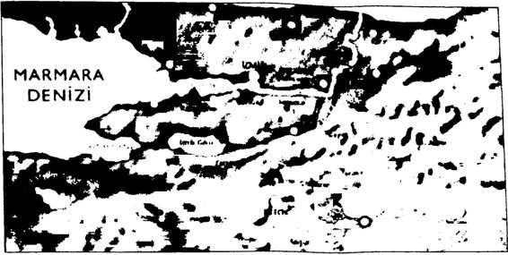 Sokullu’nun Kanal Projesi Sokullu’nun bu projesi ilk kez, Kanuni Sultan Süleyman dönemin de gündeme gelmiş ve o bölgeye bir uzman heyet gönderilmiştir.
İznik ve Sapanca gölleriyle Sakarya Nehri’nin birleştirilmesi sonu cunda açılacak kanaldan öncelikle donanmaya gereken kerestenin ve İstanbul’a gereken odunun gemilerle nakli düşünülmüştür.
Bu proje için önce Mimar Sinan ile Girez Nikola adlı bir Rum kal fası bölgeye giderek çalışmalara başlamıştır: Sapanca Gölü’nden İzmit Körfezi’ne kadar olan bölgenin “yirmi bin zirâini tesviye ettirmişler” ancak savaşlar nedeniyle projeyi tamamlayamamışlardır.
Gemi yapımında gereken kerestenin süratle nakledilmesi için 1591 yılında bu kanal projesi ikinci kez ele alınmış; İzmit, Sapanca kadıları na hükümler yazılarak “Kiraz Suyu’mın Sapanca Gölii’ne ve Sapanca Gölü’nün de İzmit Körfezi’ne akıtılması ve Sakarya Nehri’nden Sapan ca Gölü’ne, oradan da İzmit Körfezi’ne kadar olan mesafenin ölçülme si için uzmanlardan oluşan bir heyet gönderildiği” bildirilmiştir.
Kanal için çeşitli bölgelerden 30 bin amele toplanmış, kanal açı lacak yerlerdeki tarla, çiftlik ve köylerin boşaltılacağı ve halkın uygun bölgelere nakledileceği bildirilmiştir.
Bu kanal projesinin gerçekleştirileceğine inanan Veziriazam Koca Sinan Paşa, 1591 Nisan ayında kanal güzergâhını incelemek için biz zat Sapanca taraflarına kadar gitmiş, üç gün bölgede kalmış, ölçümler yaptırmış ve dönüşünde izlenimlerini Padişah III. Murad’a arz etmiştir. Ancak projenin gerçekleştirilmesinin imkânsız olduğunu ileri sürenle rin görüşlerini dikkate alan Padişah III. Murad: “Din ve devlete lâzım olur iş değildir; terk edilmesi icap eder. Halkın minnet ve meşakkat çekmesi. zulüm görmesi doğru değildir; en mühim iş donanma vücuda getirmektir. Bu zamana kadar odun nice ola geldi ise yine öyle tedarik olunurdiyerek Çılgın Kanal Projesi’nden vazgeçilmesini istemiştir.
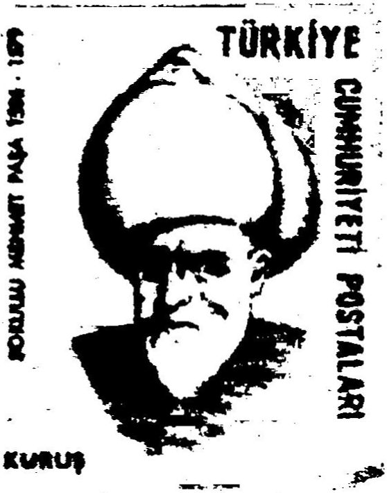 ' •* * Sokullu Mehmet Paşa Kanuni ve III. Murad’dan sonra IV. Mehmed, III. Mustafa, II. Mahmud, Abdülmecid ve Abdülaziz dönemlerinde de gündeme gelen “Çılgın Kanal Projesi”, her seferinde “çok çılgın” olduğuna karar veri lerek bir türlü hayata geçirilememiştir!
Çılgın Proje 1990 Yılında Bilim ve Teknik Dergisi’nde Başbakan’ın açıkladığı “Çılgın Proje: Kanal İstanbul”un benzeri, hatta aynısı 1990 yılında Bilim ve Teknik dergisinde bir makaleye konu olmuştur. Enerji ve Tabii Kaynaklar Bakanlığı Müşaviri Yüksel Önem, “Unutulmuş Bir Rüya” diyerek anlatmıştır Kanal İstanbul Projesi’ni...
Önem’in, Bilim ve Teknik dergisinin 1990 yılı Ağustos sayısında “İstanbul Kanalı’m Düşünüyorum'’’’ adlı bir makalesi yayımlanmış tır. Önem makalesinde Kanal İstanbul’u, “İstanbul Boğazındaki her deniz kazasından veya benzeri bir olaydan sonra zihnimde bir şim şek çakar” diyerek başlamıştır anlatmaya ve şöyle devam etmiştir:
“Sanki unutulmuş güzel bir rüyayı hatırlamış gibi olurum: İstanbul Kanalı. Evet, böyle bir şeyi hayal ederim hep Büyükçekmece Gölü’nden başlayıp Terkos Gölü’nün batısından geçerek Karadeniz’e ulaşan bir kanalı. Sadece böyle bir şey İstanbul Boğazını, hatta İstanbul’un ken disini felaketlerden kurtarabilir, derim kendi kendime 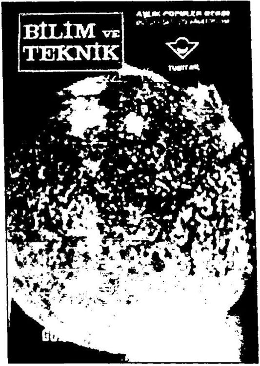 Bilim ve Teknik dergisi, Ağustos 1990, C 23, S. 273
Makalede, “Olabilir mi, bu tasavvur gerçekleşebilir mi?” diye so ran Önem, Panama, Süveyş ve Kuzey Almanya’daki Kiel Kanah’ndan örnekler vererek kanalın gerçekleştirilebilir bir proje olduğunu ileri sürmüştür. Önem, inşa edilmesini önerdiği “İstanbul Kanalı” hakkın da özetle şu bilgileri vermiştir:
“İstanbul Kanalı, İstanbul BoğazTnı çift yönlü trafikten kurtar mak için düşünülmektedir. Büyükçekmece Gölü’nden Karadeniz’e uzanacak bu kanal inşa edildiğinde, Karadeniz’den Marmara yönüne trafik ise İstanbul BoğazTndan gerçekleşecektir. Başlangıç noktasını Büyükçekmece Gölü’nün Marmara’ya açıldığı küçük körfezin içinde olduğunu kabul edersek kanal, kuzeykuzeybatı yönünde diiz bir hat teşkil ederek, Terkos Gölü’nün batısından Karadeniz’e ulaşacaktır. Uzunluğu 47 kilometredir.
Bu güzergâh örneğine göre kanalın su yüzeyindeki genişliği 100 metre, su kesimi derinliği 25 metre ve kanal tabanı eni 60 metre olursa kanalın açılması için takriben 200 milyon metreküp hacminde kayanın hasredilmesi gerekecektir. Bu projede karayolu ve demiryolu ulaşımla rının köprülerle sağlanması büyük problemler teşkil etmez. Asıl önemli konu. Tcrkos Gölii'nün bu olayda alacağı şeklin belirlenmesidir. Ka nalın bu gölün batısından geçmesi halinde, Terkos’un bu cephedeki su toplama şebekesi önemli ölçüde tahrip edilmiş olacaktır.”
Makalede, İstanbul Kanalı gibi dev bir projenin askeri, turistik, tarihi, şehrin tatlı su ihtiyacı ve balıkçılıkla ilgili olumlu olumsuz etki sinin tespit edilmesi için iyi bir süzgeçten geçirilmesi istenmiştir. Pro jenin uygulanmasıyla ortaya çıkacak 200 milyon metreküp hafriyat ile birkaç büyük liman, barınak ve benzeri tesisin inşa edilebileceği de vurgulanmıştır.
Görüldüğü gibi Başbakan Erdoğan, Yüksel Önem’in makalesinde anlattığı projeyi aynen almıştır!
Şöyle bir karşılaştırma yapalım:
Yüksel Önem’in projesinin adı “İstanbul Kanalı Projesi”dir.
Başbakan Erdoğan’ın projesinin adı “Kanal İstanbul Projesi”dir.
Yüksel Önem projesini, “Unutulmuş bir rüyayı hatırladımdiye anlatmaya başlamıştır.
Başbakan Erdoğan da projesini, “Bir hayalim var, diyerek anlat maya başlamıştır.
Yüksel Önem projesinin gerekçesini, boğazdaki kazalara dayan dırmıştır.
Başbakan Erdoğan da projesinin gerekçesini boğazdaki kazalara dayandırmıştır.
Yüksel Önem’in projesinde kanalın Büyükçekmece’den başlayıp Karadeniz’e ulaşması planlanmıştır.
Başbakan Erdoğan’ın projesinde de kanalın, Büyükçekmece’den başlayıp Çatalca üzerinden Karadeniz’e ulaşması planlanmıştır.
Yüksel Önem’in projesine göre kanalın su yüzeyindeki genişliği 100 metre, su derinliği 25 metre, uzunluğu ise 47 kilometre olarak planlanmıştır.
Başbakan’ın projesinde ise kanalın su yüzeyindeki genişliği 145 150 metre, su derinliği 25 metre, uzunluğu ise 4550 kilometre olarak planlanmıştır.
Sanki Yüksel Önem ve Başbakan Erdoğan oturup projeyi birlikte hazırlamışlar gibi?
1454 Namık Durukan, “Kanal İstanbul 1990’da Bilim Teknik Dergisi'nde”, Milliyet, 29 Nisan 2011.
İSTANBUL KANALINI DÜŞÜNÜYORUM...
İSTANBUL KANALI MEVKİİ TOPOÖRAFİK HARİTASI 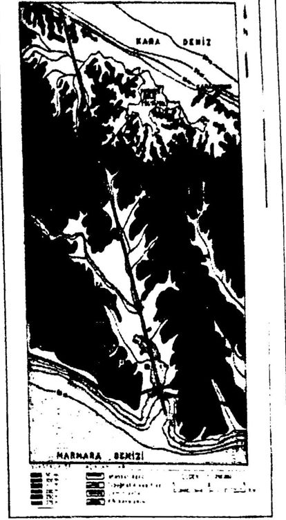 Yüksel ONLM İstanbul Boğazındaki her denu kazasından veya benzeri bir olaydan sonra zihnimde bir şimşek ça kar: sanki unutulmuş güzel bir rüyayı hatırlamış gibi olurum İstanbul Kanalı. Evet, böyle bir şeyi hayal ederim hep; Biıyükçekmece Çölünden hış layıp. Terkos Gölünün batısından geçerek Kara deniz’e ulaşan bir kanalı. Sadece böyle bir şey İstanbul Boğazı'nı, hatta İstanbul’un kendisini fe lâketlerden kurtarabilir, derim kendi kendime...
Olabilir mi; bu tasavvur gerçekleşebilir mı' Ka runlar. firavunlar ve gönülleri zengin hayalci in sanlar neler düşünmüşlerdir ki! Kimi olmuş, kimi ol mamış; bazı eserlerin ise. ancak gönüllerden geçtiği bilinebîlmiştir. İstanbul Kanalı da böyle bir şey .
Tahminlerde hatalar olur. Ama olumlu düşüne rek dünyanın büyük birkaç kanalına kısaca şöyle bir göz atmak, belki bir ilham perisi sayılabilir bazı kim seler için...
PANAMA KANALI Orta Amerika’da. Panama Cumhuriyeti toprak larından geçerek Atlantik'i Pasifik'e bağlar. 1905 te Amerikalılar tarafından başlatılan inşaatı. 1914 te so na ermiştir. Uzunluğu 82,4 km, derinliği 11.8 m ve genişliği 152 m olan bu kanalın inşası için zamanın da 35.000 msan çalışmış ve 177 milyon metreküp kaya hafriyatı yapılmıştır. Atlantik kıyışındaki Gaton gölünün seviyesi cenizder 26,5 m yukanda olduğu için, kanal güzergâhı boyunca, her biri 305 m x 33 m ebadında üç ayrı su seviyesi yükseltme havuzu (lock) inşa edilmiştir.
Son yıllarda. Panama Kanalı'nın 20 km uzağın da ve ona paralel olacak yen: bir kanalın inşası hız la ilerlemektedir. Bu defa iki okyanus deniz seviyesinde birleşeceği için, güzergâhta artık yük seltme havuzlan yer almayacaktır. Tasarı gerçekleş tirildiği takdirde, bir milyar sekiz yüz milyon metreküp hacminde kaya hafredılmış bulunacak; bu suretle de. halen ancak 65.000 tonluk gemıienn seyredebildiği kanalın yer ne, 33 m derinliği olan ve 500.000 ton luk tankerlerin bile geçebileceği dev bir eser mey dana getirilmiş olacaktır SÜVEYŞ KANALI Kızıldemz'. Akdeniz'e bağlayacak böyle tur su yo lu, M 0 600 de Firavun Nekao tarafından hayal edil miş ve hatta, ta o devırdo bazı çalışmalar bue yapılmıştır Ancak bu büyük hayalı gerçekleştirmek, zamanın OsmanlI İmparatorluğu yla iyi ilişkiler ku ran Fransızlara nasıp olmuştur. İnşaat, Mısır hıdivi Saıd Paşa döneminde. 1859'da başlamış birkaç fa sıladan sonra, 1669'da sona ermiştir, bunluğu 161 km olup, başlargıçtak. derinliği maksimum 8 m. ge nişliği ise, 60 m'dir. 1956'da Mısır hükümeti tarafın dan devletleştrildikten sonra, kanal derinliği 10 hatta 13 m yc kadar düşürülmüş; genişlik, yüzeyde 8C m'den 150 m'ye. kanal tabanında ise. 60 m'ye ka dar çıkarılmıştır Genişletilmiş bu son halinden sonra, seyahat su resi 45 saatten 15 saate kadar indimmiş olmakla be raber. kanann büyük bölümünde trafik yine de tek yönlüdür KUL KANALI Kuzey Almanya'daki Kıet şehn önünde başlayış, batıda Elbe netin ağzında sona ermek suretiyle Ba tık Demzi'ni Kuzey Denızi'ne bağlar 18871895 yılları arasında yapılmış o<an bu kanalın uzunluğu, 99 km, genişliği 103 m. derinliği ise, 11 m kadard.r Esas itibarıyla askeri amaçla inşa edilmiş olup. I Dünya Savaşı ndan hemen önce daha büyük gemılen aıa cak şekilde genişletilmiştir.
u»r Mf t t ıtı» \,t
Yüksel Önem'in Bilim ve Teknik dergisindeki makalesinden bölümler
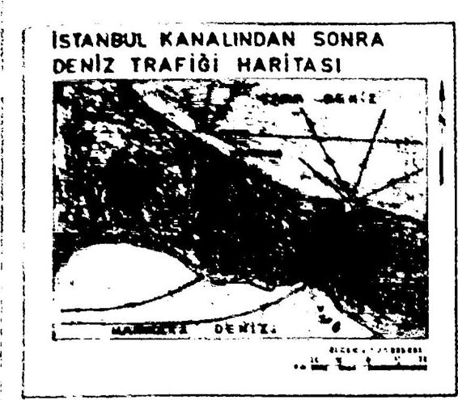 İSTANBUL KANALI DOŞÛNCCSt Bu kısa belerden sonra, inşasını tasarladığımız j İstanbul Kanalı hakkında şunlar söylenebilir İstanbul Kanalı. İstanbul Boğazı nı çift yönlü tra fikten kurtarmak için düşünülmektedir Büyük Çek mece golünden Karadeniz'e uzanacak bu kanal inşa edı‘dığınde. Karadeniz'den Marmara yönüne trafik bu kanaıdan. Marmara'dan Karadeniz yönüne tra fik ise. İstanbul Boğazı'ndan gerçekleşecektirfistan : bul Kanalı ndan Sonra Deniz Trafiği Harltası'na j bakınız) Büyük Çekmece ile Karadeniz arasında, ka ! na! narımda yer alan 100 m’den biraz yüksek topog rafik noktaların teşkil ettiği kısa profiller, yatay düziemde ancak 1500 m kadardır; 100 m'lik kısım lar ise, sadece 2500 m'den ibarettir Geri kalan ge niş profilde, yükseklikler süratle 50 m'ye ve daha i sonra da deniz seviyesine inmektedir; esasen 6500 ; m Iik kısım. Çekmece gölü içinde kalmaktadır De , mek oluyor ki, böyle bir kanalı hayal ederken, kazı I tacak malzeme hacminin, tasavvurun üstünde olamayacağı söylenebilir (İstanbul Kanalı Mevkii To pografık Harıtası’na ve Kanal Hattı En Yüksek Mev ki "den Geçen Topografik Kesıt'e bakınız).
Baş angıç noktasını, Büyükçekmece Gölü’nün j Marmara'ya açıldığı küçük körfezin içinde olduğu nu kabul edersek, kanal kuzeykuzey batı yönünde j cüz bir hal teşkil ederek, Terkos Gölü'nün batısın j dan Karadeniz'e ulaşacaktır; uzunluğu 47 km’dır.
I Bu güzergâh örneğine göre, kanalın su yüzeyin j deki genişliği. 100 m, su kesimi derinliği, 25 m ve kanai tabanı eni, 60 m olursa, kanalın açılması için îaknben 200 milyon metreküp hacminde kayanın haf rec imesı gerekecektir(Detay Kanal Kesıti'ne | sakınız)
Bu projede karayolu ve demiryolu ulaşımlarının köprülerle sağlanması büyük problemler teşkil et mez Asıl önemli konu, Terkos Gölü'nün bu olayda aıacağı şeklin belirlenmesidir. Kanalın, bu gölün ba I t smdan geçmesi halinde. Terkos'un bu cephedeki su top’ama şebekesi önemli ölçüde tahrip edilmiş olacaktır. 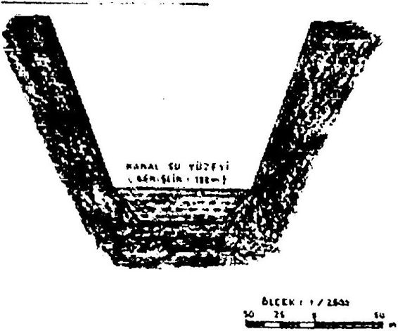
Yüksel Önem’in Bilim Teknik dergisindeki makalesinden bölümler
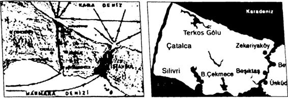 İşte Yüksel Önem’in İstanbul İşte Başbakan’ın Kanal İstanbul Kanalı Projesi Projesi Aslında “Çılgın Proje”nin her şeyiyle Yüksel Önem’in projesinden “alıntı” olduğunu iddia etmek Başbakan’a haksızlık olur! Ne de olsa Yüksel Önem’in projesinin adı “İstanbul Kanalı”, Başbakan’ın proje sinin adı ise “Kanal İstanbul’dur! Ayrıca, Yüksel Önem projesini “bir rüya”, Başbakan ise “bir hayal” olarak adlandırmıştır! Görüldüğü gibi her iki proje arasında bazı farklar da yok değil hani!
Çılgın Proje’yi 1990’larda Nusret Avcı Açıklamıştı Beyoğlu Belediyesi ve İstanbul Büyükşehir Belediyesi eski Meclis Üyesi ve Çevre Komisyon Başkanı, Beyoğlu Belediyesi Başkan Yardım cısı, İnşaat Mühendisi Nusret Avcı, Başbakan Erdoğan’ın kamuoyuna açıkladığı “Kanal İstanbul Projesi’nin kendisine ait olduğunu iddia et miştir.
Çanakkale’de bağcılık yapan Avcı, Milliyet gazetesinin bu konu daki sorularını yanıtlamıştır.
Avcı Çılgın Proje’nin kendisine ait olduğunu şöyle açıklamıştır: “Ben bunu açıkladığım zaman Erdoğan partisinin (Refah Partisi) İs tanbul il başkanıydı. Bu bilgileri biliyordu. Ben o zaman Beyoğlu Bele diye Başkan Yardtmcısıydım. Rus Konsolosluğu bile gelip bu projeyle ilgili bilgi almıştı. Ben I994'te DSP'ye geçtim. Ecevit'in o yıl İstanbul seçim bildirgesinin teknik ve sekretaryasını ben yapmıştım. O tarihte bu projeyle ilgili açıkladığı tüm bilgiler benim tarafımdan verildi.”
Avcı proje konusunda şunları söylemiştir:
“ Yap, işlet, devret modelini önermiştim. Ecevit de çok heyecan landı, kamuoyuna da açıkladı, ama iktidar olamayınca proje kaldı.
Bu bir dünya projesi. Tamamen bana ait. Bütün detaylarıyla bana ait. Kimse ortaya çıkıp ‘Katkıda bulundumV dahi diyemez. Her zaman uy gulanabilir bir projedir. Tüm ülkeler her açıdan katkıda bulunabilir ler. önemli olan bu ütopyanın düşünülmüş ve gerçekliğinin görülmüş olması. Ben o zaman Panama Kanalları dahil birçok kanalı inceledim. Hiç kimse buna Sokullu Mehmet Paşa’nın düşündüğü güzergâh deme sin. çünkü onun Sakarya üzerinden bir boğaz düşündüğünü biliyoruz 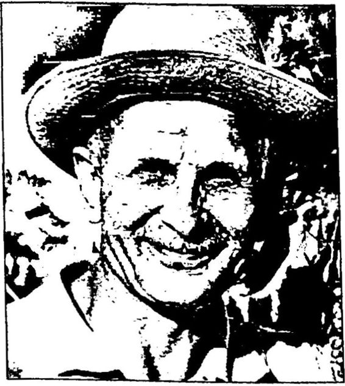 Nusret Avcı 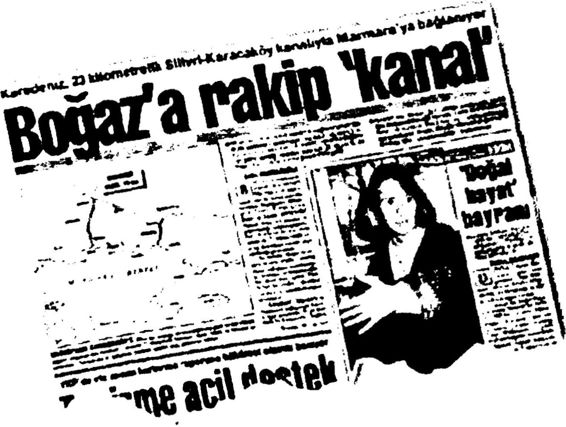 Nusret Avcı, 2 Şubat 1991 tarihli Milliyet gazetesinde projesini ayrıntılı olarak anlatmış.
1455 *Bogaz’a Rakip Kanal”, Milliyet, 2 Şubat 1991.
Nusret Avcı, “Bu projeyi açıklayan Başbakan’a kızdınız mı?” so rusuna da şöyle yanıt vermiştir:
“Sayın Başbakan’a kızmadım... Diyalog kurabilirdi, daha say gıdeğer olurdu. Çünkü biliyorlar, o dönemden herkes birbirini tanır. Kendisiyle yakından biliriz birbirimizi. Çok şaşırdım; aylardan beri ütopya, çılgın proje olarak bekleniyordu. Aklıma geldi, benim proje olabilir mi diye, ama sonra ihtimal vermedim. Böyle büyük bir projeyi hayata geçirmek için çalışmış bir mühendis olarak elbette kızgınlıkla karşılamıyorum. Sayın Başbakan araştırıp bana sorsalardı, ben de za ten kendilerine kolaylıklar dilerdim.”
Ecevit’in Mega Projesi’nden Erdoğan’ın Çılgın Projesi’ne Başbakan’ın “Çılgın Proje” adını verdiği “Kanal İstanbul”u ka muoyuna açıklayan ilk siyasi lider Bülent Ecevit’tir. Ecevit, bu projeyi 1994 yılında açıklamıştır.
“Proje bana aittir!” diyen Nusret Avcı, “Ben 1994’te DSP’ye geç tim. Ecevit’in o yıl İstanbul seçim bildirgesinin teknik ve sekretarya sını ben yapmıştım. O tarihte bu projeyle ilgili açıkladığı tüm bilgiler benim tarafımdan verildi,” diyerek, Kanal İstanbul Projesi’ni Bülent Ecevit’e sunduğunu belirtmiştir.
Bülent Ecevit 1994’te, DSP Genel Başkanı olduğu dönemde İstanbul’un batı yakasında Marmara’yla Karadeniz arasında bir kanal açılarak Boğaz’ın yükünün hafifletilmesini önermiştir.
CHP Genel Başkan Yardımcısı Emrehan Halıcı da, “Bu proje 1994 yılında Bülent Ecevit’e ait bir projeydi. Bu Sayın Ecevit’in fikriy di. Bununla ilgili dokümanları araştırıyorum. Başbakan’ın yeni olarak ortaya çıkardığı proje yeni bir fikir değil...” diyerek, projenin Ecevit tarafından gündeme getirildiğini doğrulamıştır.
1994 yılında Ecevit’in kamuoyuna tanıttığı Kanal İstanbul Projesi, Hürriyet gazetesinin 18 Ocak 1994 tarihli sayısının birinci sayfasında “Ecevit’ten Mega Proje” diye okuyuculara duyurulmuştu.
1456 Şükran Pakkan, “Projeyi Ben Yaptım, Ecevit I994'te Seçim Bildirgesine Koydu”, Milliyet, 29 Nisan 2011.
775
Ecevit Karadeniz’den Marmara’ya kanal açı İsmi 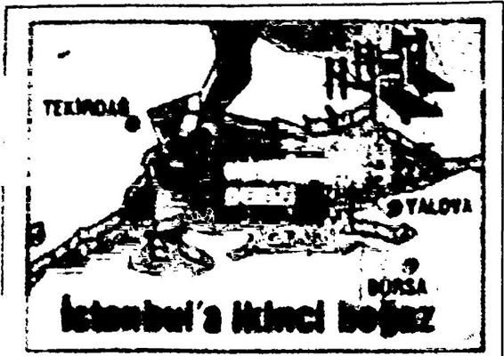
Ecevitten mega proje Sibel KÖKLÜ • İSTANBUL USP Genel Baltanı Bülent Ecevit. Istanbul'un sorunlarını, belediyenin kaynak yaratarak adan Necdet Özkan'la birlikte düaml«Ü{l basın toplantısında konuşan Ecrvlt, İstanbul'un «orunlarının yalnızca buyukkent çevraindo çûnimlcnerneyeccftlnl söyledi.
İstanbul’un aonınlannı İstanbul'a ete veren Anadolu'dan bağlayarak çözeceklerini kaydeden ~ ‘ ~ ıdly^rar şirketi arazilerden Ecevit, bugün belediyelerin kendi yarnrt rantlardan yararlanamadığını. oysa özel şirket ve holdinglerin belediyelerin trUyoruar kazandığını söv. Bayrampaşa'da beted idenin k yaratmasını_ tasamı hayal ..Biz kaynağını yaratma ınuşta ARMA ıln İstanbul'u tehdit a Devletler ıl Topkılutu petrollerinin de buradan geçirilmesi durumunda Boğaziçi'nin tıkanma noktasına ■clecegtnl UM;. Ecevit buna çözüm olarak, «anbul’un Avrupa yakasında Karadeniz’le •* o orasında bir kanal açılmasını önerdi Böyle btr kanalın açılması durumunda tanker ve Haliç arasında da bir bağlantı kurulabilir. Böylelikle Haliç"in temizlik sorunu kendiliğinden çözülecekdiye konuşta Ecevit. İstanbul’da hava kirliliğinin nedeninin kalitesiz linyit kömürü olduğunu belirtti.
Çöp toplama alanları kurulacağım da açıklayan Ecevit. bu İşin çöplüklerde düzenlenen özel şovlarla çözülmesinin mümkün olmadıkını söyledi Necdet Özkan da kaynak yaratıcı, ve üretken belediyecilikten taviz vermeyeceklerini belirtti Ecevit’in Kanal İstanbul Projesi 1994’te basına böyle yansımıştı (Milliyet, 18 Ocak 1994).t emiz Haberde, dönemin DSP Genel Başkanı Bülent Ecevit, DSP İstanbul Büyükşehir Belediye Başkan adayı Necdet Özkan’la birlikte düzenledi ği basın toplantısı hakkında bilgi verilmiştir. Ecevit bu toplantıda, Ka radeniz ile Marmara’nın bir kanalla birbirine bağlanması için "mega bir proje” geliştirdiklerini açıklarken, proje için büyük bir finansman gerekmediğini de belirtmişti.
Ecevit “ikinci bir boğaz” işlevi görecek kanalın iki ağzına limanlar kurulabileceğini ve serbest bölgeler oluşturulabileceğini de kaydetmiş ti. Slayt ve video görüntüleriyle projeyi tanıtan Ecevit, kanalın “yap îşletdevret” yöntemiyle yapılabileceğini, finansmanın dış kredilerle sağlanabileceğini anlatmıştı.
DSP Genel Başkanı Masum Türker de, Başbakan Tayyip Erdo ğan’ın Kanal İstanbul ile ilgili toplantısının ardından bir açıklama ya parak İstanbul’a kanal projesini, 1994 yerel seçimleri öncesinde Bülent Ecevit’in dile getirdiğini hatırlatmıştır. DSP İstanbul Büyükşehir Bele diye Başkan adayı Necdet Özkan’ın seçim broşüründe de bu projenin yer aldığını belirten Türker, yaptığı yazılı açıklamada, “Herhalde o dö nemde İstanbul Büyükşehir Belediye Başkan adayı olan Sayın Tayyip Erdoğan o broşürü alıp saklamış!” demiştir.
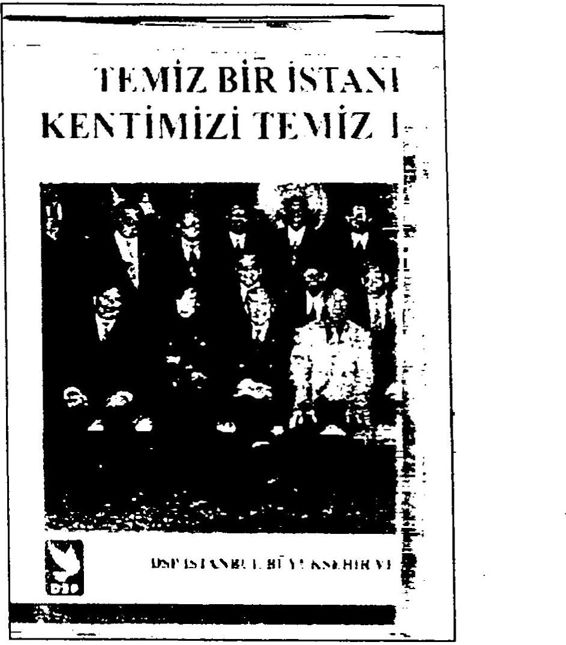
Boğsu ve D.S.P.’nin Kanal Projesi Boğazın gemi trafiğine, ö/eDikle vakit ve tehlikeli madde yük'u gönderin gidış gclıyne açık olmasının son ao örneği, bu ayın içindeki, tanker façasıdır Tehlike, çr şükür olabildiğince ucuz allatıldı Ama. yeni tehlikeler her /aman kaptmı/dadır Dolayısıyla, DSP >ım İstanbul Boğazından yakıt tankerlerinin geçişinin önlenerek, yeni btf kanal projevy'e Karadeniz tic Marmara’nın bırk>un!m«wun devlet ve uluslararası konsorsiyumlara gerçekleştirilmesi m gündeme tutacağı/ Takıp edeceğiz Bûyk bu kanal. Boğa/ içinde sadece yolcu permlerinin gıdifgehync olanak tanıyacakta Boylecc kent ıçı deniz ulayau da arucakor Kana) çevresinde yeru v< buyuk bu yerleşim ve çekim merkezi oluşacakta Kanakn Karadeniz'le Marmara ağızlarında serbest bölgeler kurulabilecektir İşte DSP’nin Kanal İstanbul Projesi’nin yer aldığı broşürün kapağı İşte DSP broşüründe Kanal İstanbul Projesi
Görüldüğü gibi rahmetli Bülent Ecevit’in “Mega Projesi”, 17 yıl içinde evrimleşerek Başbakan R. Tayyip Erdoğan’ın “Çılgın Projesi”ne dönüşüvermiş!
İşte bütün bu gerçeklerden dolayı Başbakan’ın açıkladığı projeye “çılgın proje” değil, “alıntı proje” demek çok daha doğru olur!
İlk olarak 500 yıl kadar önce Sokullu Mehmet Paşa, sonra, 21 yıl önce Yüksel Önem, daha sonra ise 18 yıl kadar önce Nusret Avcı tara fından gündeme getirilen ve 17 yıl önce Bülent Ecevit tarafından kamu oyuyla paylaşılan “Kanal İstanbul Projesi”ni son olarak 2011 yılında AKP Genel Başkanı Başbakan R. Tayyip Erdoğan kamuoyuna sun muştur. Bu durumda Başbakan Erdoğan “Kanal İstanbul Projesi”nin son sahibidir. Ancak yakın tarihe fazlaca meraklı olan, sürekli tarihle yüzleşen Erdoğan, nedense hiçbir zaman Çılgın Proje’nin bu kısa tarihi hakkında bilgi verme ihtiyacı hissetmemiştir.
Başbakan Erdoğan’ın tarih tezlerine cevap verip de Erdoğan’la özdeşleşen “Çılgın Proje: Kanal İstanbul” tarihinden söz etmemek ol mazdı hani!
Sonuç Atatürk ve birkaç arkadaşının bin bir güçlükle mücadele ederek bir bağımsızlık savaşıyla kurup, bir çağdaşlaşma hareketiyle yükselttiği Türkiye Cumhuriyeti, 1946’dan beri aralıksız devam eden “bağımlı” ve “dinci” bir kuşatma sonunda bugün 2013 yılında yeniden biçimlen dirilmekle yüz yüze gelmiştir.
Kimilerinin “Yeni Türkiye” adını verdiği bu yeniden biçimlenme sürecinde bu Yeni Türkiye’ye özgü yeni bir tarih yazılmakta ve bu yeni tarih, kitleselleştirilmeye çalışılmaktadır.
“Tarihle yüzleşme” adı altında Türkiye Cumhuriyeti’nin kuruluş dönemi tarihi çarpıtılmakta ve yeniden yazılmaktadır.
Yeni Türkiye’ye özgü ordu, polis, yargı, basın ve insan tip yarat ma sürecinde Yeni Türkiye’ye özgü yeni bir de tarih yaratılmaktadır.
Bu sırada hainler kahraman, kahramanlar hain yapılmakta, tuhaf özürler dilenmekte, Cumhuriyet’in kurucuları yerden yere vurulurken Osmanlı padişahları yüceltilmektedir.
Son on yılda Türk Ulus Devleti’ni Yeni Osmanlı’ya dönüştürme hayali çerçevesinde AKP Genel Başkanı Başbakan R. Tayyip Erdoğan, kurgusal tarih tezleriyle “Cumhuriyet tarihinin ilk 1520 yılıyla yüzle şirken”, derin bir haz, büyük bir gurur ve sevinç duymaktadır.
Nasıl mı?
En iyisi biz susalım fotoğraflar konuşsun!
Belgelere dayanarak tarihi yanlışları düzeltmek, eksikleri tamam lamak başka şeydir, tarihi siyasal amaçlar doğrultusunda çarpıtıp ye niden kurgulamak başka şeydir. Ben birincisine taraftarım ama İkinci sine karşıyım.
Kağnıyla kamyonu yenen bir neslin altın harflerle yazılmış “Türk Bağımsızlık ve Aydınlanma Savaşı Tarihi”ni çarpıtıp yeniden kurgula manın olanaksız olduğunu yine tarih gösterecektir.
Bu tarihi çarpıtanları, beyazı siyah, siyahı beyaz göstermeye çalı şanları da tarih yargılayacaktır.
Başbakan Erdoğan, 16 Nisan 2013 tarihli AKP grup konuşmasın da tarihi çok iyi bildiğini şöyle ifade etmiştir:
"... Biz tarihi çok ama çok iyi biliriz. Biz tarihi Göktürk anıtların dan Tonyukuk anıtlarına, Malazgirt’ten Mohaç’a kadar, İstanbul’un fethinden Çaldıran’a kadar, Çanakkale’den Kurtuluş Savaşı’na çok ama çok iyi biliriz...”
Yılmaz Özdü ise Beraber Yürüdük Biz Bu Yıllarda adlı kitabında Başbakan Erdoğan’ın tarih bilgisinden şöyle söz etmiştir:
“ Başbakanımızın tarih bilgisi hayranlık uyandırıcıydı. Malazgirt Zaferi’nin yıldönümünde konuştu, ‘Romen Diyojen batarya, batarya, gülle gülle saldırırken, Sultan Alparslan ve askerleri Allah Allah diye saldırıyordu,’ dedi. Ayakta alkışlandı. 1071’de gülle, top filan yoktu. Barut anca 250 sene sonra toplarda kullanılmaya başlandı. Ama ol sundu... Tarihçiler daha iyi bilecek değildi.”
“‘İstanbul’un tarihçesini bilmiyorlar, tarih bilseler konuşmaya yüzleri olmaz, öyle elinde mercekle Romen Diyojen gibi dolaşılmaz,’ dedi. Mercekle dolaşan, hayali roman kahramanı Sherlock Holmes’tii. Mercek yerine fenerle dolaşan Diyojen’in İstanbul’la alakası yok tu. Sinoplu filozoftu. Romen Diyojen desen zaten mercekle, fenerle alakası yoktu. Malazgirt’te Alparslan’a esir düşen Bizans imparato ruydu. Özetle... Tarih dersi verirken 1500 senelik hata yapmış, Di yojenleri karıştırmış, Sherlock Holmes’le harmanlamış, yine de denk getirememişti. ”
Başbakan R. Tayyip Erdoğan erken Cumhuriyet dönemiyle yüzleşirken Kaynakça Arşivler (Arşiv belgelerinin numaraları dipnotlarda verilmiştir)